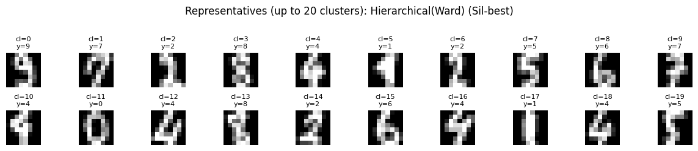
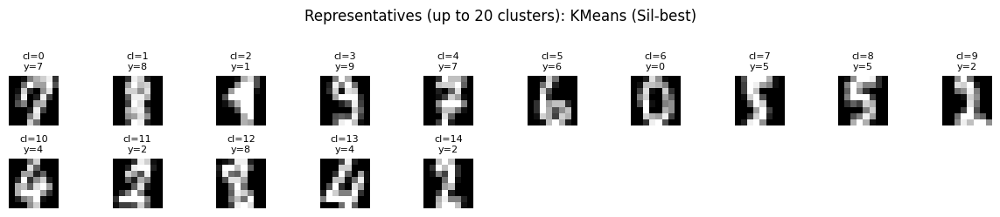

군집・비지도학습: 사례분석
군집・비지도학습 사례분석
1. Digits 데이터 불러오기 및 설명
Digits 데이터셋은 UCI의 Optical Recognition of Handwritten Digits 자료(원래 5,620개 중 scikit-learn에는 테스트셋 1,797개가 수록됨)에서 가져온 것으로, 손글씨 숫자를 미리 인쇄된 양식에 작성하게 한 뒤 이미지를 전처리하여 구축된 것이다.
구체적으로 각 손글씨는 NIST 전처리 프로그램으로 정규화된 32×32 비트맵으로 만든 다음, 이를 겹치지 않는 4×4 블록으로 나누어 각 블록에서 ‘켜진 픽셀(on pixel)’ 개수를 세어 0~16 범위의 값을 얻고, 이렇게 계산된 8×8(=64개) 값이 한 관측치의 특징벡터가 된다.
따라서 Digits의 “픽셀값”은 일반 회색조 밝기라기보다, 해당 영역에서 글씨가 차지하는 정도를 요약한 블록 단위 밀도(density) 지표이며, 이 특성 때문에 거리 기반 군집, 혼합모형(GMM), PCA/딥 임베딩 기반 군집 비교 실습에 적절한 표준 사례로 사용된다.
scikit-learn의 Digits 데이터셋은 0~9 손글씨 숫자를 8×8 흑백 이미지로 표현한 자료이다. 각 관측치는 64개의 픽셀 강도(feature)로 구성된 벡터이며, 픽셀 값의 범위는 대략 0~16이다. 표본 크기는 1,797개이며, 비지도학습 군집 사례에 적절한 이유는 다음과 같다.
- 차원이 64로 적절하여(고차원 효과가 있으나 과도하지 않음) 군집 기법 비교가 용이하다.
- 원자료 공간(픽셀)에서의 군집, 확률모형 기반(GMM) 군집, PCA/딥 임베딩 기반 군집을 모두 적용하기 쉽다.
- 정답 라벨(숫자 0~9)이 존재하므로, 학습에는 숨기고 최종 비교에서만 외부평가(ARI, NMI 등)에 사용할 수 있다.
이후 분석에서는 입력 데이터는 \(X \in \mathbb{R}^{n\times p}\) 로 두고(\(n=1797, p=64\)), 라벨 \(y\) 는 평가용 보조정보로만 사용한다.
import numpy as np
import pandas as pd
import matplotlib.pyplot as plt
from sklearn.datasets import load_digits
# 재현성
RANDOM_STATE = 42
np.random.seed(RANDOM_STATE)
# 데이터 로드
digits = load_digits()
X = digits.data # (n, 64) : 8x8 이미지를 1차원 벡터로 펼친 것
y = digits.target # (n,) : 실제 숫자 라벨(평가용으로만 사용할 것)
images = digits.images # (n, 8, 8) : 원래 이미지 형태
n, p = X.shape
print(f"n = {n}, p = {p}")
print(f"pixel value range: min={X.min():.1f}, max={X.max():.1f}")
print("classes:", np.unique(y), " (총", len(np.unique(y)), "개)")
# 클래스 분포 확인(평가용 참고)
counts = pd.Series(y).value_counts().sort_index()
display(pd.DataFrame({"count": counts, "proportion": counts / counts.sum()}))
# 샘플 이미지 시각화 (각 숫자별 1개씩)
fig, axes = plt.subplots(2, 5, figsize=(10, 4))
axes = axes.ravel()
for digit_label in range(10):
idx = np.where(y == digit_label)[0][0]
axes[digit_label].imshow(images[idx], cmap="gray")
axes[digit_label].set_title(f"label={digit_label}")
axes[digit_label].axis("off")
plt.tight_layout()
plt.show()
# 데이터 행렬의 간단 요약(평균/표준편차)
X_df = pd.DataFrame(X)
summary = pd.DataFrame({
"mean": X_df.mean(),
"std": X_df.std(),
"min": X_df.min(),
"max": X_df.max()
})
display(summary.head(5))데이터 X.shape = (1797, 64)
array([[ 0., 0., 5., ..., 0., 0., 0.],
[ 0., 0., 0., ..., 10., 0., 0.],
[ 0., 0., 0., ..., 16., 9., 0.],
...,
[ 0., 0., 1., ..., 6., 0., 0.],
[ 0., 0., 2., ..., 12., 0., 0.],
[ 0., 0., 10., ..., 12., 1., 0.]])n = 1797, p = 64
pixel value range: min=0.0, max=16.0
classes: [0 1 2 3 4 5 6 7 8 9] (총 10 개)
count proportion
0 178 0.099054
1 182 0.101280
2 177 0.098497
3 183 0.101836
4 181 0.100723
5 182 0.101280
6 181 0.100723
7 179 0.099610
8 174 0.096828
9 180 0.100167이 그림은 Digits 데이터셋이 어떤 형태의 입력 X 로 구성되어 있는지를 “눈으로 확인”하기 위한 대표 샘플 시각화이다.
각 작은 패널(예: label=0, label=1, …, label=9)은 숫자 클래스별로 관측치 1개씩을 골라 보여준 것이다. (코드에서 idx = np.where(y==digit_label)[0][0]로 해당 숫자 라벨 중 ’첫 번째 샘플’을 선택한 결과이다.)
한 장의 이미지는 8×8 격자이며, 즉 한 관측치가 64개의 변수(픽셀/블록 값) 로 이루어진다는 뜻이다. 색의 의미는 밝을수록 값이 크다는 의미이다. Digits의 값은 보통 0~16 범위이며, 값이 클수록 그 위치(블록)에 글씨 획이 많이 포함되어 있다는 뜻이다. 따라서 흰색에 가까운 칸은 글씨가 많이 지나간 영역, 검은 칸은 거의 비어 있는 영역이다.
이 그림은 “각 숫자가 대략 어떤 획 구조를 갖는가”를 보여주는 동시에, 예를 들어 3과 8, 4와 9처럼 모양이 비슷해 보이는 클래스가 존재함을 보여주므로, 이후 군집에서 군집 간 분리가 완벽하지 않을 수 있음을 미리 시사하는 역할도 한다.

mean std min max
0 0.000000 0.000000 0.0 0.0
1 0.303840 0.907192 0.0 8.0
2 5.204786 4.754826 0.0 16.0
3 11.835838 4.248842 0.0 16.0
4 11.848080 4.287388 0.0 16.0전처리: 표준화
Digits 데이터는 픽셀 값이 0~16 범위로 제한되어 있고, 각 픽셀의 분포도 유사한 형태를 띠므로, 표준화(평균 0, 표준편차 1)와 같은 스케일링이 반드시 필요한 것은 아니다. 그러나 이후 군집 기법에서 거리 계산이 포함되는 경우(예: K-means, GMM)에는 스케일링이 성능에 영향을 줄 수 있으므로, 표준화는 일반적으로 권장되는 전처리 단계이다. 표준화를 적용하면 각 픽셀의 평균이 0, 표준편차가 1이 되어, 모든 픽셀이 동일한 스케일로 비교될 수 있다.
#(선택) 표준화 데이터도 함께 준비(2단계부터 비교용으로 유용)
from sklearn.preprocessing import StandardScaler
scaler = StandardScaler()
X_std = scaler.fit_transform(X)
print("X_std summary:")
print("mean (approx):", X_std.mean(axis=0)[:5])
print("std (approx):", X_std.std(axis=0)[:5])2. 모델기반 군집(GMM)
이 코드는 Digits 데이터에 대해 Gaussian Mixture Model(GMM)을 적합하여 군집을 수행하고, 군집 수 (K)와 공분산 형태(covariance type)를 바꿔가며 AIC/BIC로 최적 조합을 선택한 뒤, 선택된 모형의 군집 성능을 외부지표(ARI/NMI)로 요약하고 AIC/BIC 곡선을 시각화하는 절차이다.
설정(데이터, K 후보, 공분산 형태, 수치 안정화 파라미터)이다
X_use = X_std는 표준화된 데이터를 분석 대상으로 선택하는 부분이다. GMM은 공분산을 추정하므로 스케일 차이가 크면 수치적으로 불안정해질 수 있어 표준화가 일반적으로 안정적이다.K_list = range(2, 21)은 군집 수 후보 (K)를 2부터 20까지로 두는 설정이다.cov_types = ["spherical","diag","tied","full"]은 공분산 형태를 네 가지로 비교하는 설정이다. 이는 군집의 모양(구형/축정렬/공유공분산/자유공분산)을 달리 가정하는 것이다.N_INIT=10은 초기값을 여러 번 달리하여 EM을 반복 실행하고, 그 중 더 좋은 해를 선택하기 위한 설정이다.MAX_ITER=500은 EM 반복 횟수 상한이다.REG_COVAR=1e-6은 공분산 특이(singularity) 문제를 완화하기 위한 정규화 항이다.
(K, 공분산 형태) 조합별로 GMM을 적합하고 AIC/BIC를 계산한다
- 이중 반복문은 모든 조합 ((K, ))에 대해
GaussianMixture(...).fit(X_use)를 수행한다. - 적합 이후
gmm.aic(X_use)와gmm.bic(X_use)를 계산하여records에 저장한다. log_likelihood = gmm.score(X_use) * n은 관측치당 평균 로그우도(score)에 표본 수를 곱해 전체 로그우도를 기록한 것이다.converged는 EM이 수렴했는지 여부를 나타내는 진단값이다.- 최종적으로
results데이터프레임은 (공분산 형태, K)별 AIC/BIC/로그우도/수렴여부를 정리한 표이다.
AIC/BIC 기준으로 최적 조합을 선택한다
best_bic_row는results에서 BIC가 최소인 행을 선택한 것이다. 이는 BIC 기준 최적의 ((K,)) 조합이다.best_aic_row는 AIC가 최소인 행을 선택한 것이다.- 일반적으로 BIC는 복잡도 패널티가 더 강하여(AIC보다) 더 보수적인 (K)를 선택하는 경향이 있다.
선택된 최적 모형으로 재학습하여 군집 라벨과 소속확률을 만든다
fit_best_gmm(row)함수는 선택된 설정(행에 들어 있는 (K), 공분산 형태)으로 GMM을 다시 적합하는 함수이다.z_hat = gmm.predict(X_use)는 각 관측치를 사후확률이 가장 큰 성분에 배정한 hard assignment 군집 라벨이다.resp = gmm.predict_proba(X_use)는 각 관측치가 각 군집에 속할 확률(책임도, responsibility) 행렬이다.- 코드에서는 BIC-best, AIC-best 각각에 대해
z_bic,z_aic와 책임도resp_bic,resp_aic를 생성한다.
외부평가(ARI/NMI)로 방법 비교를 정리한다
adjusted_rand_score(y, z_*)와normalized_mutual_info_score(y, z_*)는 실제 숫자 라벨 (y)와 군집 결과 (z)의 일치도를 계산하는 부분이다.- 이는 군집 학습에 라벨을 사용한 것이 아니라, 동일 데이터에서 방법을 비교하기 위한 사후 평가 지표로 사용한 것이다.
공분산 형태별 AIC/BIC 곡선을 시각화한다
pivot_bic,pivot_aic는 K(행) × 공분산 형태(열) 구조로 BIC/AIC를 재배열한 표이다.- 마지막 두 그래프는 (K)에 따른 BIC/AIC 변화가 공분산 형태별로 어떻게 달라지는지를 보여준다.
- 이 시각화는 (i) 어떤 공분산 구조가 유리한지, (ii) 선택되는 (K)가 어디인지, (iii) AIC와 BIC가 얼마나 다른 선택을 하는지 확인하는 진단 단계이다.
import numpy as np
import pandas as pd
import matplotlib.pyplot as plt
from sklearn.cluster import KMeans, AgglomerativeClustering
from sklearn.metrics import silhouette_score, adjusted_rand_score, normalized_mutual_info_score
# =========================
# 0) 공통 설정
# =========================
RANDOM_STATE = 42
# 동일 데이터 기준으로 비교 (권장: 표준화)
X_use = X_std # 필요하면 X로 변경 가능
K_list = list(range(2, 21))
# =========================
# 1) 보조 함수: WSS(Within SS) 계산 (모든 알고리즘 공통)
# - k-means는 inertia_가 WSS와 동일
# - 계층군집도 라벨만 있으면 centroid 기반 WSS 계산 가능
# =========================
def compute_wss(X, labels):
"""각 군집의 중심(평균) 기준으로 WSS = sum ||x - mu_k||^2 계산"""
wss = 0.0
for k in np.unique(labels):
Xk = X[labels == k]
mu = Xk.mean(axis=0)
wss += ((Xk - mu) ** 2).sum()
return float(wss)
def elbow_k_by_second_diff(Ks, wss_values):
"""
간단한 Elbow 자동화:
- WSS를 0~1로 정규화한 뒤
- 2차 차분(곡률)이 가장 큰 K를 elbow로 선택
"""
Ks = np.array(Ks, dtype=float)
wss = np.array(wss_values, dtype=float)
# 단조감소가 아닐 수도 있는 수치오차 대비
wss = np.maximum(wss, 0)
# 정규화 (큰 값/작은 값 스케일 영향 제거)
wss_norm = (wss - wss.min()) / (wss.max() - wss.min() + 1e-12)
# 2차 차분
d1 = np.diff(wss_norm)
d2 = np.diff(d1) # 길이: len(Ks)-2
if len(d2) == 0:
return int(Ks[0])
# 곡률이 가장 큰 지점(절대값 크게)
idx = np.argmax(np.abs(d2))
# d2는 K[0..] 기준으로 (K[idx+1]) 위치에 해당
return int(Ks[idx + 1])
# =========================
# 2) (4.2) 전통적 군집: k-means / 계층군집(Ward, Complete)
# - 각 K에서 silhouette, WSS, ARI, NMI 계산
# =========================
records = []
# ---- (A) k-means ----
for K in K_list:
km = KMeans(n_clusters=K, random_state=RANDOM_STATE, n_init=20)
z = km.fit_predict(X_use)
sil = silhouette_score(X_use, z, metric="euclidean")
wss = float(km.inertia_) # = WSS
records.append({
"method": "KMeans",
"K": K,
"silhouette": sil,
"wss": wss,
"ARI": adjusted_rand_score(y, z),
"NMI": normalized_mutual_info_score(y, z)
})
# ---- (B) Hierarchical: Ward / Complete ----
def agglomerative_fit_predict(X, K, linkage):
# sklearn 버전 호환(affinity vs metric)
try:
model = AgglomerativeClustering(n_clusters=K, linkage=linkage, metric="euclidean")
except TypeError:
model = AgglomerativeClustering(n_clusters=K, linkage=linkage, affinity="euclidean")
return model.fit_predict(X)
for K in K_list:
# Ward
z_ward = agglomerative_fit_predict(X_use, K, linkage="ward")
sil_ward = silhouette_score(X_use, z_ward, metric="euclidean")
wss_ward = compute_wss(X_use, z_ward)
records.append({
"method": "Hierarchical(Ward)",
"K": K,
"silhouette": sil_ward,
"wss": wss_ward,
"ARI": adjusted_rand_score(y, z_ward),
"NMI": normalized_mutual_info_score(y, z_ward)
})
# Complete
z_comp = agglomerative_fit_predict(X_use, K, linkage="complete")
sil_comp = silhouette_score(X_use, z_comp, metric="euclidean")
wss_comp = compute_wss(X_use, z_comp)
records.append({
"method": "Hierarchical(Complete)",
"K": K,
"silhouette": sil_comp,
"wss": wss_comp,
"ARI": adjusted_rand_score(y, z_comp),
"NMI": normalized_mutual_info_score(y, z_comp)
})
trad_results = pd.DataFrame(records).sort_values(["method", "K"]).reset_index(drop=True)
display(trad_results.head(10))
# =========================
# 3) K 선택: Silhouette-best + Elbow-best(자동) 각각 구하기
# =========================
best_rows = []
for m in trad_results["method"].unique():
dfm = trad_results[trad_results["method"] == m].copy()
# (i) Silhouette-best
sil_best = dfm.loc[dfm["silhouette"].idxmax()]
# (ii) Elbow-best (WSS 곡률 기반)
elbowK = elbow_k_by_second_diff(dfm["K"].values, dfm["wss"].values)
elbow_row = dfm[dfm["K"] == elbowK].iloc[0]
best_rows.append({
"method": m,
"K_sil_best": int(sil_best["K"]),
"silhouette_sil_best": float(sil_best["silhouette"]),
"wss_sil_best": float(sil_best["wss"]),
"ARI_sil_best": float(sil_best["ARI"]),
"NMI_sil_best": float(sil_best["NMI"]),
"K_elbow": int(elbow_row["K"]),
"silhouette_elbow": float(elbow_row["silhouette"]),
"wss_elbow": float(elbow_row["wss"]),
"ARI_elbow": float(elbow_row["ARI"]),
"NMI_elbow": float(elbow_row["NMI"]),
})
selection_table = pd.DataFrame(best_rows).sort_values("method").reset_index(drop=True)
display(selection_table)
# =========================
# 4) 그래프: Elbow(WSS) / Silhouette 곡선 (방법별)
# =========================
methods = trad_results["method"].unique()
# (A) WSS Elbow
plt.figure(figsize=(10, 4))
for m in methods:
dfm = trad_results[trad_results["method"] == m]
plt.plot(dfm["K"], dfm["wss"], marker="o", label=m)
plt.xlabel("K")
plt.ylabel("WSS (lower is better)")
plt.title("Elbow Curve (WSS) - Traditional Clustering")
plt.grid(True, alpha=0.3)
plt.legend()
plt.show()
# (B) Silhouette
plt.figure(figsize=(10, 4))
for m in methods:
dfm = trad_results[trad_results["method"] == m]
plt.plot(dfm["K"], dfm["silhouette"], marker="o", label=m)
plt.xlabel("K")
plt.ylabel("Silhouette (higher is better)")
plt.title("Silhouette Curve - Traditional Clustering")
plt.grid(True, alpha=0.3)
plt.legend()
plt.show()
# =========================
# 5) GMM(BIC-best)와 동일 형식 비교표 만들기
# - 기존 셀에서 best_bic_row, z_bic, results(GMM AIC/BIC table)가 존재한다고 가정
# =========================
comparison_rows = []
# (A) GMM(BIC-best) 포함 (있을 때만)
if "best_bic_row" in globals() and "z_bic" in globals():
K_gmm = int(best_bic_row["K"])
cov_gmm = str(best_bic_row["covariance_type"])
# silhouette/WSS도 같이 계산(내부지표 통일)
sil_gmm = silhouette_score(X_use, z_bic, metric="euclidean")
wss_gmm = compute_wss(X_use, z_bic)
# AIC/BIC 값도 같이 적어두면 보고서가 깔끔함
aic_gmm = float(best_bic_row["aic"]) if "aic" in best_bic_row else np.nan
bic_gmm = float(best_bic_row["bic"]) if "bic" in best_bic_row else np.nan
comparison_rows.append({
"method": f"GMM(BIC-best, {cov_gmm})",
"K": K_gmm,
"silhouette": sil_gmm,
"wss": wss_gmm,
"ARI": adjusted_rand_score(y, z_bic),
"NMI": normalized_mutual_info_score(y, z_bic),
"AIC": aic_gmm,
"BIC": bic_gmm
})
else:
print("⚠️ best_bic_row 또는 z_bic가 없습니다. (GMM 셀 실행 후 다시 실행하세요.)")
# (B) 전통적 군집: silhouette-best 기준으로 한 줄씩 요약
for _, row in selection_table.iterrows():
comparison_rows.append({
"method": row["method"] + " (Sil-best)",
"K": int(row["K_sil_best"]),
"silhouette": float(row["silhouette_sil_best"]),
"wss": float(row["wss_sil_best"]),
"ARI": float(row["ARI_sil_best"]),
"NMI": float(row["NMI_sil_best"]),
"AIC": np.nan,
"BIC": np.nan
})
comparison = pd.DataFrame(comparison_rows)
# 보기 좋게 정렬: 내부지표(실루엣 높은 순) 또는 ARI 높은 순
comparison_sorted = comparison.sort_values(["ARI", "silhouette"], ascending=False).reset_index(drop=True)
display(comparison_sorted)BIC 기준으로 선택된 GMM은 대각 공분산(diag)과 K=20을 택하여 숫자 10종을 직접 재현하기보다 숫자 내부의 필기체 변이를 포함한 더 세분화된 잠재집단 구조를 제안하였으며, 그 결과 ARI/NMI는 중간 수준의 외부 일치도를 보이는 반면 군집 간 거리 분리도(silhouette)는 낮게 나타나 군집들이 공간상으로 겹치는 경향이 있음을 시사한다.
반면, 전통적 군집에서는 실루엣 지표가 가장 높은 계층군집(Complete, K=2)이 가장 낮은 ARI/NMI를 보이는 반면, 실루엣이 낮은 Ward 군집(K=20)이 가장 높은 ARI/NMI를 보여, 실루엣과 외부 일치도 간의 트레이드오프가 존재함을 보여준다.
왜 K=20이 “숫자 10종”이 아니라 “더 잘게 쪼갠 구조”라는 뜻인가?
Digits의 진짜 숫자 라벨은 0~9, 총 10개입니다. 그런데 GMM이 BIC로 고른 군집 수는 K=20 이다.
이 말은 GMM이 “0,1,2,…,9를 하나씩 군집으로 만들겠다”가 아니라 예를 들어 ‘0을 두 부류(둥근 0 / 찌그러진 0)’, ‘1을 두 부류(가느다란 1 / 굵은 1)’ 처럼 같은 숫자 안에서도 필기 스타일 차이를 따로 군집으로 분리했을 가능성이 크다는 뜻이다. 즉, 숫자(10개) 보다 더 세분화된 잠재집단(20개) 을 제안한 것입니다.
ARI/NMI가 “중간”이라는 뜻은?
ARI/NMI는 군집 결과가 실제 숫자 라벨(0~9)과 얼마나 비슷한지를 보는 점수이다. 그런데 GMM은 K=20으로 숫자 하나를 여러 군집으로 쪼갤 수 있으니, “숫자 10개와 1:1로 딱 맞는 군집”이 되기 어렵다.
그래서 ARI/NMI가 완벽(1에 가까움)하게 나오기보다는, 그래도 숫자 구분을 어느 정도 반영하면 중간 정도 점수가 나온다.
즉 “완전한 숫자 분류는 아니지만, 숫자 구조와 어느 정도 관련은 있다”는 의미이다.
그런데 왜 silhouette는 낮게 나오나?
silhouette는 “군집끼리 거리상으로 얼마나 분리되어 있나” 를 보는 지표이다. silhouette가 높다 → 군집들이 멀리 떨어져 있고 서로 잘 구분됨 silhouette가 낮다 → 군집들이 서로 가까이 섞여 있음(겹침)
Digits는 애초에 3과 8, 4와 9처럼 모양이 비슷한 숫자도 있고, 또 같은 숫자 안에서도 다양한 필기체가 있어서 데이터가 공간상 겹치기 쉽다. 그래서 GMM이 20개로 잘게 쪼개도 각 군집이 “멀리 떨어진 섬”처럼 분리되지 않고, 가까운 곳에 겹쳐 있는 상태가 될 수 있다 → silhouette가 낮게 나온다.
한 줄로 다시 말하면 GMM(BIC-best)은 숫자 10개를 그대로 맞추려 하기보다, 숫자 안의 스타일 차이까지 반영해 20개로 세분화했는데, 그 세분화된 군집들이 거리 공간에서는 서로 많이 겹쳐 보여 silhouette가 낮게 나온다는 뜻이다.
method K silhouette wss ARI NMI
0 Hierarchical(Complete) 2 0.784424 106721.094913 0.000002 0.001556
1 Hierarchical(Complete) 3 0.779755 105134.196220 0.000002 0.002223
2 Hierarchical(Complete) 4 0.733223 102725.043083 -0.000002 0.003753
3 Hierarchical(Complete) 5 0.430919 98680.223906 0.000290 0.020400
4 Hierarchical(Complete) 6 0.432321 97196.179621 0.000353 0.023599
5 Hierarchical(Complete) 7 0.433767 95458.376649 0.000352 0.026290
6 Hierarchical(Complete) 8 0.433629 94923.776923 0.000353 0.026916
7 Hierarchical(Complete) 9 0.384715 93599.700879 0.000311 0.027731
8 Hierarchical(Complete) 10 0.385738 91939.649024 0.000298 0.031561
9 Hierarchical(Complete) 11 0.386541 91283.712892 0.000289 0.032888
method K_sil_best silhouette_sil_best wss_sil_best ARI_sil_best NMI_sil_best K_elbow silhouette_elbow wss_elbow ARI_elbow NMI_elbow
0 Hierarchical(Complete) 2 0.784424 106721.094913 0.000002 0.001556 13 0.317344 89979.315231 0.000289 0.036864
1 Hierarchical(Ward) 20 0.152754 54003.237083 0.688082 0.794962 3 0.091561 95529.286988 0.276093 0.493419
2 KMeans 15 0.158307 59534.498937 0.568326 0.688241 18 0.155479 57000.786005 0.524090 0.683195

method K silhouette wss ARI NMI AIC BIC
0 Hierarchical(Ward) (Sil-best) 20 0.152754 54003.237083 0.688082 0.794962 NaN NaN
1 KMeans (Sil-best) 15 0.158307 59534.498937 0.568326 0.688241 NaN NaN
2 GMM(BIC-best, diag) 20 0.093540 62457.729652 0.437694 0.596951 -232769.805429 -218601.104675
3 Hierarchical(Complete) (Sil-best) 2 0.784424 106721.094913 0.000002 0.001556 NaN NaNGMM(BIC-best) 군집 결과 해석: “숫자 10개가 얼마나 쪼개졌는가?”
여기서는 GMM(BIC-best) 로 얻은 군집 라벨 z_bic이 실제 숫자 라벨 y(0~9)와 어떻게 대응되는지를 해석한다. 분석의 초점은 “군집 수가 10개인가?”가 아니라, 각 군집이 얼마나 한 숫자에 ‘순수하게’ 대응하는가(섞임/혼합), 각 숫자가 몇 개의 군집으로 ’분해’되는가(쪼개짐/분할)를 동시에 파악하는 데 있다.
군집 × 실제 숫자 교차표 만들기
먼저 다음 교차표를 만든다. \(ct = \text{crosstab}(z_{\text{bic}}, y)\)
- 행(row): GMM이 만든 cluster
- 열(column): 실제 숫자 digit(0~9)
- 원소 (ct_{k,d}): “군집 (k)에 속한 표본 중 실제 숫자가 (d)인 개수”
이 표는 한눈에 두 가지를 보여준다.
- 군집 혼합(mixing): 한 군집이 여러 숫자를 동시에 포함하는가?
- 숫자 분할(splitting): 한 숫자가 여러 군집에 흩어져 있는가?
군집별 대표 숫자와 순도(purity)
군집 (k)에 대해 다음을 계산한다.
- 군집 크기(표본 수): \(n_k = \sum_{d=0}^{9} ct_{k,d}\)
- 대표 숫자(다수결): \(d_k^* = \arg\max_d ct_{k,d}\)
- 대표 숫자의 개수: \(m_k = \max_d ct_{k,d}\)
- 군집 순도(purity): \(\text{purity}_k = \frac{m_k}{n_k}\)
해석
- \(\text{purity}_k \approx 1\) 이면 → 군집 (k)는 거의 하나의 숫자에 대응하는 순수 군집이다.
- \(\text{purity}_k\) 가 낮으면 → 군집 (k)는 여러 숫자가 섞인 혼합 군집이다.
실제 코드에서는 cluster_summary 표로 (군집 크기, 대표 숫자, 순도)를 정리해 군집 해석의 출발점으로 삼는다.
전체 순도(Overall Purity): 다수결 기준 단일 요약 지표
군집별 순도를 한 줄로 요약한 지표가 overall purity(majority-vote overall purity)이다.
\(\frac{\sum_k m_k}{n}\)
- \(\sum_k m_k\) : 각 군집에서 가장 많이 등장한 숫자의 개수를 모두 합한 값
- n: 전체 표본 수
의미(강의용 직관)
“각 군집에 대표 숫자 라벨을 하나 붙이고(다수결), 그렇게 분류했다고 생각하면 전체적으로 얼마나 맞는가?” 즉, 군집 결과를 가장 단순한 방식으로 숫자와 매핑했을 때의 전체 정확도에 해당하는 요약값이다.
숫자별 “쪼개짐(분할)”을 정량화하기
이번에는 군집 관점이 아니라 숫자 관점으로 본다. 각 숫자 (d)가 군집들에 어떻게 분포하는지를 보고, “몇 개 군집으로 분해되는가?”를 계산한다.
(A) 80%를 설명하는 최소 군집 수
숫자 (d) 표본을 많이 담고 있는 군집부터 정렬한 뒤, 누적 비율이 80%를 넘는 데 필요한 군집 개수를 계산한다. \(k_{80\%}(d)\)
- 값이 1이면 → 거의 한 군집에 집중(쪼개짐이 작음)
- 값이 크면 → 여러 군집으로 분산(쪼개짐이 큼)
(B) 유의미한 분할 군집 수(예: 10개 이상 포함)
아주 소량(몇 개) 흩어진 것은 노이즈일 수 있으므로, 예를 들어 “해당 숫자가 10개 이상 들어있는 군집이 몇 개인가”를 함께 본다.
히트맵으로 “섞임/쪼개짐”을 한 번에 보기
교차표 (ct)를 히트맵으로 그리면,
- 특정 숫자 열(column)이 여러 군집 행(row)으로 퍼져 있으면 → 그 숫자는 쪼개짐
- 특정 군집 행(row)이 여러 숫자 열(column)에 걸쳐 있으면 → 그 군집은 섞임
또한 군집 번호는 임의이므로, 보기 좋게 대표 숫자 → 순도 → 크기 순으로 군집을 정렬해 시각화하면 해석이 훨씬 쉬워진다.
핵심 정리(한 문단)
GMM(BIC-best) 군집 결과는 단순히 “10개 숫자를 10개 군집으로 맞췄는가”보다, 숫자별 형태 다양성 때문에 하나의 숫자가 여러 군집으로 분해되는 현상과 군집 내부에 여러 숫자가 섞이는 현상을 함께 보여준다. 이때 군집별 순도는 “군집이 얼마나 순수한가”를, 숫자별 분할 지표는 “숫자가 얼마나 쪼개졌는가”를 나타내며, overall purity(majority vote) 는 전체적인 구조 대응 수준을 한 줄로 요약한다.
import numpy as np
import pandas as pd
import matplotlib.pyplot as plt
# ===== 0) 교차표(클러스터 x 실제 숫자) =====
ct = pd.crosstab(z_bic, y, rownames=["cluster"], colnames=["digit"])
display(ct)
# ===== 1) 각 클러스터의 대표 숫자(다수결)와 순도(purity) =====
cluster_size = ct.sum(axis=1)
major_digit = ct.idxmax(axis=1)
major_count = ct.max(axis=1)
cluster_purity = (major_count / cluster_size)
cluster_summary = pd.DataFrame({
"size": cluster_size,
"major_digit": major_digit,
"major_count": major_count,
"purity": cluster_purity
}).sort_values(["purity","size"], ascending=False)
print("=== Cluster summary (major digit & purity) ===")
display(cluster_summary)
# ===== 2) “한 숫자(digit)가 몇 개 클러스터로 쪼개졌는가?” =====
# 기준 A: 그 숫자 샘플 중 80%를 설명하는 데 필요한 클러스터 개수
# 기준 B: 그 숫자에서 표본이 일정 이상(예: >=10개) 들어있는 클러스터 개수
threshold = 10
cover_rate = 0.80
digit_rows = []
for d in range(10):
col = ct[d]
total = int(col.sum())
if total == 0:
continue
# 클러스터별로 해당 숫자 count 내림차순 정렬
counts_sorted = col.sort_values(ascending=False)
# (A) 상위 몇 개 클러스터가 cover_rate(예: 80%)를 커버하는가
cum = counts_sorted.cumsum() / total
k_cover = int((cum < cover_rate).sum() + 1) # 80% 넘기는 최소 개수
# (B) 표본이 threshold 이상 들어있는 클러스터 개수(유의미한 분할 수)
k_ge_thr = int((counts_sorted >= threshold).sum())
# 상위 5개 클러스터 비중(어디에 몰려 있는지)
top5 = (counts_sorted.head(5) / total).values
digit_rows.append({
"digit": d,
"n_samples": total,
f"clusters_to_cover_{int(cover_rate*100)}%": k_cover,
f"clusters_with_>=_{threshold}": k_ge_thr,
"top1_share": top5[0] if len(top5)>0 else np.nan,
"top2_share": (top5[0]+top5[1]) if len(top5)>1 else np.nan,
"top5_share": np.sum(top5) if len(top5)>0 else np.nan,
})
digit_split = pd.DataFrame(digit_rows).sort_values("digit")
print("=== Digit split summary ===")
display(digit_split)
# ===== 3) 히트맵(클러스터 x 숫자)로 “쪼개짐/섞임” 시각화 =====
# 보기 좋게: 클러스터를 대표숫자→순도→크기 순으로 정렬
order = cluster_summary.sort_values(["major_digit","purity","size"], ascending=[True, False, False]).index
ct_ordered = ct.loc[order]
plt.figure(figsize=(10, 8))
plt.imshow(ct_ordered.values, aspect="auto")
plt.colorbar(label="count")
plt.xlabel("digit (0~9)")
plt.ylabel("cluster (ordered)")
plt.title("GMM(BIC-best) cluster x digit counts")
plt.xticks(ticks=np.arange(10), labels=np.arange(10))
plt.yticks([]) # 클러스터가 많으니 y축 라벨은 생략
plt.show()
# ===== 4) (선택) “숫자별로 상위 클러스터 3개” 출력 =====
for d in range(10):
s = ct[d].sort_values(ascending=False)
total = s.sum()
top3 = (s.head(3) / total).round(3)
print(f"digit {d}: top3 clusters shares -> {top3.to_dict()}")digit 0 1 2 3 4 5 6 7 8 9
cluster
0 2 84 4 10 2 7 7 6 19 2
1 0 0 0 0 0 92 0 0 0 0
2 0 0 0 0 87 0 0 0 0 0
3 0 0 0 103 0 0 0 0 1 0
4 0 0 0 0 3 0 0 19 0 2
5 0 0 0 0 2 1 131 0 0 0
6 0 26 2 14 3 16 1 1 84 21
7 3 2 3 10 1 24 3 0 36 38
8 0 0 0 2 2 11 0 99 0 3
9 2 0 0 20 0 23 0 0 0 66
10 0 0 0 0 30 0 0 4 0 11
11 0 0 0 0 43 0 0 0 0 0
12 0 0 0 0 0 0 0 50 0 0
13 0 1 81 4 0 0 0 0 3 0
14 0 4 65 19 0 6 0 0 18 15
15 0 1 0 0 0 0 0 0 0 0
16 0 0 1 0 0 0 0 0 0 0
17 168 0 0 0 1 0 0 0 0 0
18 2 41 8 0 7 0 1 0 9 6
19 1 23 13 1 0 2 38 0 4 16
=== Cluster summary (major digit & purity) ===
size major_digit major_count purity
cluster
1 92 5 92 1.000000
2 87 4 87 1.000000
12 50 7 50 1.000000
11 43 4 43 1.000000
15 1 1 1 1.000000
16 1 2 1 1.000000
17 169 0 168 0.994083
3 104 3 103 0.990385
5 134 6 131 0.977612
13 89 2 81 0.910112
8 117 7 99 0.846154
4 24 7 19 0.791667
10 45 4 30 0.666667
9 111 9 66 0.594595
0 143 1 84 0.587413
18 74 1 41 0.554054
14 127 2 65 0.511811
6 168 8 84 0.500000
19 98 6 38 0.387755
7 120 9 38 0.316667
=== Digit split summary ===
digit n_samples clusters_to_cover_80% clusters_with_>=_10 top1_share top2_share top5_share
0 0 178 1 1 0.943820 0.960674 0.994382
1 1 182 3 4 0.461538 0.686813 0.978022
2 2 177 2 3 0.457627 0.824859 0.966102
3 3 183 4 6 0.562842 0.672131 0.907104
4 4 181 3 3 0.480663 0.718232 0.939227
5 5 182 4 5 0.505495 0.637363 0.912088
6 6 181 2 2 0.723757 0.933702 0.994475
7 7 179 2 3 0.553073 0.832402 0.994413
8 8 174 4 4 0.482759 0.689655 0.954023
9 9 180 5 6 0.366667 0.577778 0.866667
digit 0: top3 clusters shares -> {17: 0.944, 7: 0.017, 0: 0.011}
digit 1: top3 clusters shares -> {0: 0.462, 18: 0.225, 6: 0.143}
digit 2: top3 clusters shares -> {13: 0.458, 14: 0.367, 19: 0.073}
digit 3: top3 clusters shares -> {3: 0.563, 9: 0.109, 14: 0.104}
digit 4: top3 clusters shares -> {2: 0.481, 11: 0.238, 10: 0.166}
digit 5: top3 clusters shares -> {1: 0.505, 7: 0.132, 9: 0.126}
digit 6: top3 clusters shares -> {5: 0.724, 19: 0.21, 0: 0.039}
digit 7: top3 clusters shares -> {8: 0.553, 12: 0.279, 4: 0.106}
digit 8: top3 clusters shares -> {6: 0.483, 7: 0.207, 0: 0.109}
digit 9: top3 clusters shares -> {9: 0.367, 7: 0.211, 6: 0.117}3. 전통적 군집분석(Traditional Clustering)
이 절의 코드는 거리 기반 전통적 군집방법인 K-means와 계층적 군집(Agglomerative Clustering: Ward, Complete)을 동일 데이터에서 비교한다. 비교 기준은 내부 평가 지표인 Silhouette와 WSS(Within-cluster Sum of Squares), 그리고 실제 라벨이 존재하는 경우에만 계산 가능한 외부 평가 지표 ARI와 NMI이다. 외부 지표는 비지도 학습의 일반적 상황에서는 사용할 수 없으며, 여기서는 평가 목적으로만 활용된다.
기본 설정과 데이터 준비
코드는 numpy, pandas, matplotlib을 불러오고 군집 알고리즘과 평가 지표를 import한다.
- 군집 알고리즘: KMeans, AgglomerativeClustering
- 평가 지표: silhouette_score, adjusted_rand_score, normalized_mutual_info_score
난수 고정값 RANDOM_STATE=42를 설정하여 결과 재현성을 확보한다.
거리 기반 군집은 변수 스케일의 영향을 크게 받으므로, 분석에는 표준화된 데이터 X_std를 사용한다. 또한 군집 수 후보는 K=2부터 K=20까지 설정하여 최적 K를 탐색한다.
WSS 계산 함수의 의미
WSS는 군집 내부 응집도를 나타내는 대표적인 지표이다. \(WSS = \sum_{k=1}^{K}\sum_{i \in C_k} |x_i - \mu_k|^2\). 여기서 \(\mu_k\) 는 군집 k의 중심이다.
K-means는 inertia_로 WSS를 직접 제공하지만, 계층군집은 그렇지 않다. 따라서 compute_wss(X, labels) 함수를 만들어 모든 방법에 동일한 정의의 WSS를 적용한다. 이렇게 하면 서로 다른 알고리즘을 공정하게 비교할 수 있다.
Elbow 자동 선택 함수
Elbow 방법은 WSS 감소 곡선에서 꺾이는 지점을 찾아 적절한 K를 선택하는 방식이다. 일반적으로는 그래프를 보고 사람이 판단하지만, 코드에서는 2차 차분을 이용해 자동으로 꺾임이 큰 지점을 찾는다.
절차는 다음과 같다.
- WSS 값을 0~1 범위로 정규화
- 1차 차분과 2차 차분 계산
- 2차 차분 절댓값이 가장 큰 지점을 Elbow로 선택
이는 WSS 감소 속도가 급격히 완만해지는 지점을 수치적으로 탐지하는 방법이다.
K별 군집 수행 및 지표 계산
각 K(2~20)에 대해 다음 과정을 수행한다.
(1) K-means
각 K에 대해 KMeans를 실행하고 군집 라벨 z를 얻는다.
- Silhouette 계산
- WSS는 inertia_ 사용
- ARI, NMI는 실제 라벨 y와 비교하여 계산
Silhouette는 군집 내부 응집도와 군집 간 분리도를 동시에 반영하며 값이 클수록 좋다. WSS는 작을수록 좋다. ARI와 NMI는 실제 구조와의 일치도를 나타내며 클수록 좋다.
(2) 계층군집: Ward, Complete
AgglomerativeClustering을 사용하여 군집을 생성한다. Ward는 분산 증가를 최소화하는 방식이며, Complete는 최대 거리 기준으로 군집을 병합한다.
계층군집은 inertia가 없으므로 compute_wss로 WSS를 계산한다. Silhouette와 외부 지표 역시 동일하게 계산한다.
이 과정을 통해 방법 × K 조합별 성능이 trad_results에 저장된다.
K 선택 기준 비교
방법별로 두 가지 기준을 적용한다.
- Silhouette가 최대가 되는 K 선택: \(K^*_{sil} = \arg\max_K silhouette(K)\)
- Elbow 자동 선택 K: 이 두 기준으로 선택된 K와 그때의 지표를 selection_table에 정리한다.
Silhouette 기준은 분리도 중심의 선택이며, Elbow 기준은 응집도 감소 패턴 중심의 선택이다.
시각화 해석
코드는 방법별로 다음 두 곡선을 그린다.
- WSS Elbow curve
- Silhouette curve
WSS는 K 증가에 따라 항상 감소한다. 따라서 감소 속도가 둔화되는 지점이 중요하다. Silhouette는 반드시 단조 증가하지 않으며, 데이터 구조에 따라 특정 K에서 최대값을 가진다. 두 기준이 동일한 K를 제시하면 선택이 명확하지만, 다를 경우 해석과 분석 목적을 고려해야 한다.
분석적 의미
이 전통적 군집 분석 코드는 단순히 알고리즘을 실행하는 데 목적이 있지 않다.
- 동일한 데이터에서 여러 방법을 비교한다.
- 내부 지표와 외부 지표의 차이를 이해한다.
- K 선택이 단일 기준으로 결정되지 않음을 보여준다.
- 이후 GMM과 같은 확률모형 기반 군집과 구조적으로 비교할 준비를 한다.
즉, 이 코드는 군집 알고리즘의 성능 비교를 넘어, “군집 수 선택”과 “지표 해석”이라는 군집분석의 핵심 문제를 학습하기 위한 구조를 갖고 있다.
import numpy as np
import pandas as pd
import matplotlib.pyplot as plt
from sklearn.cluster import KMeans, AgglomerativeClustering
from sklearn.metrics import silhouette_score, adjusted_rand_score, normalized_mutual_info_score
# =========================
# 0) 공통 설정
# =========================
RANDOM_STATE = 42
# 동일 데이터 기준으로 비교 (권장: 표준화)
X_use = X_std # 필요하면 X로 변경 가능
K_list = list(range(2, 21))
# =========================
# 1) 보조 함수: WSS(Within SS) 계산 (모든 알고리즘 공통)
# - k-means는 inertia_가 WSS와 동일
# - 계층군집도 라벨만 있으면 centroid 기반 WSS 계산 가능
# =========================
def compute_wss(X, labels):
"""각 군집의 중심(평균) 기준으로 WSS = sum ||x - mu_k||^2 계산"""
wss = 0.0
for k in np.unique(labels):
Xk = X[labels == k]
mu = Xk.mean(axis=0)
wss += ((Xk - mu) ** 2).sum()
return float(wss)
def elbow_k_by_second_diff(Ks, wss_values):
"""
간단한 Elbow 자동화:
- WSS를 0~1로 정규화한 뒤
- 2차 차분(곡률)이 가장 큰 K를 elbow로 선택
"""
Ks = np.array(Ks, dtype=float)
wss = np.array(wss_values, dtype=float)
# 단조감소가 아닐 수도 있는 수치오차 대비
wss = np.maximum(wss, 0)
# 정규화 (큰 값/작은 값 스케일 영향 제거)
wss_norm = (wss - wss.min()) / (wss.max() - wss.min() + 1e-12)
# 2차 차분
d1 = np.diff(wss_norm)
d2 = np.diff(d1) # 길이: len(Ks)-2
if len(d2) == 0:
return int(Ks[0])
# 곡률이 가장 큰 지점(절대값 크게)
idx = np.argmax(np.abs(d2))
# d2는 K[0..] 기준으로 (K[idx+1]) 위치에 해당
return int(Ks[idx + 1])
# =========================
# 2) (4.2) 전통적 군집: k-means / 계층군집(Ward, Complete)
# - 각 K에서 silhouette, WSS, ARI, NMI 계산
# =========================
records = []
# ---- (A) k-means ----
for K in K_list:
km = KMeans(n_clusters=K, random_state=RANDOM_STATE, n_init=20)
z = km.fit_predict(X_use)
sil = silhouette_score(X_use, z, metric="euclidean")
wss = float(km.inertia_) # = WSS
records.append({
"method": "KMeans",
"K": K,
"silhouette": sil,
"wss": wss,
"ARI": adjusted_rand_score(y, z),
"NMI": normalized_mutual_info_score(y, z)
})
# ---- (B) Hierarchical: Ward / Complete ----
def agglomerative_fit_predict(X, K, linkage):
# sklearn 버전 호환(affinity vs metric)
try:
model = AgglomerativeClustering(n_clusters=K, linkage=linkage, metric="euclidean")
except TypeError:
model = AgglomerativeClustering(n_clusters=K, linkage=linkage, affinity="euclidean")
return model.fit_predict(X)
for K in K_list:
# Ward
z_ward = agglomerative_fit_predict(X_use, K, linkage="ward")
sil_ward = silhouette_score(X_use, z_ward, metric="euclidean")
wss_ward = compute_wss(X_use, z_ward)
records.append({
"method": "Hierarchical(Ward)",
"K": K,
"silhouette": sil_ward,
"wss": wss_ward,
"ARI": adjusted_rand_score(y, z_ward),
"NMI": normalized_mutual_info_score(y, z_ward)
})
# Complete
z_comp = agglomerative_fit_predict(X_use, K, linkage="complete")
sil_comp = silhouette_score(X_use, z_comp, metric="euclidean")
wss_comp = compute_wss(X_use, z_comp)
records.append({
"method": "Hierarchical(Complete)",
"K": K,
"silhouette": sil_comp,
"wss": wss_comp,
"ARI": adjusted_rand_score(y, z_comp),
"NMI": normalized_mutual_info_score(y, z_comp)
})
trad_results = pd.DataFrame(records).sort_values(["method", "K"]).reset_index(drop=True)
display(trad_results.head(10))
# =========================
# 3) K 선택: Silhouette-best + Elbow-best(자동) 각각 구하기
# =========================
best_rows = []
for m in trad_results["method"].unique():
dfm = trad_results[trad_results["method"] == m].copy()
# (i) Silhouette-best
sil_best = dfm.loc[dfm["silhouette"].idxmax()]
# (ii) Elbow-best (WSS 곡률 기반)
elbowK = elbow_k_by_second_diff(dfm["K"].values, dfm["wss"].values)
elbow_row = dfm[dfm["K"] == elbowK].iloc[0]
best_rows.append({
"method": m,
"K_sil_best": int(sil_best["K"]),
"silhouette_sil_best": float(sil_best["silhouette"]),
"wss_sil_best": float(sil_best["wss"]),
"ARI_sil_best": float(sil_best["ARI"]),
"NMI_sil_best": float(sil_best["NMI"]),
"K_elbow": int(elbow_row["K"]),
"silhouette_elbow": float(elbow_row["silhouette"]),
"wss_elbow": float(elbow_row["wss"]),
"ARI_elbow": float(elbow_row["ARI"]),
"NMI_elbow": float(elbow_row["NMI"]),
})
selection_table = pd.DataFrame(best_rows).sort_values("method").reset_index(drop=True)
display(selection_table)
# =========================
# 4) 그래프: Elbow(WSS) / Silhouette 곡선 (방법별)
# =========================
methods = trad_results["method"].unique()
# (A) WSS Elbow
plt.figure(figsize=(10, 4))
for m in methods:
dfm = trad_results[trad_results["method"] == m]
plt.plot(dfm["K"], dfm["wss"], marker="o", label=m)
plt.xlabel("K")
plt.ylabel("WSS (lower is better)")
plt.title("Elbow Curve (WSS) - Traditional Clustering")
plt.grid(True, alpha=0.3)
plt.legend()
plt.show()
# (B) Silhouette
plt.figure(figsize=(10, 4))
for m in methods:
dfm = trad_results[trad_results["method"] == m]
plt.plot(dfm["K"], dfm["silhouette"], marker="o", label=m)
plt.xlabel("K")
plt.ylabel("Silhouette (higher is better)")
plt.title("Silhouette Curve - Traditional Clustering")
plt.grid(True, alpha=0.3)
plt.legend()
plt.show()
# =========================
# 5) GMM(BIC-best)와 동일 형식 비교표 만들기
# - 기존 셀에서 best_bic_row, z_bic, results(GMM AIC/BIC table)가 존재한다고 가정
# =========================
comparison_rows = []
# (A) GMM(BIC-best) 포함 (있을 때만)
if "best_bic_row" in globals() and "z_bic" in globals():
K_gmm = int(best_bic_row["K"])
cov_gmm = str(best_bic_row["covariance_type"])
# silhouette/WSS도 같이 계산(내부지표 통일)
sil_gmm = silhouette_score(X_use, z_bic, metric="euclidean")
wss_gmm = compute_wss(X_use, z_bic)
# AIC/BIC 값도 같이 적어두면 보고서가 깔끔함
aic_gmm = float(best_bic_row["aic"]) if "aic" in best_bic_row else np.nan
bic_gmm = float(best_bic_row["bic"]) if "bic" in best_bic_row else np.nan
comparison_rows.append({
"method": f"GMM(BIC-best, {cov_gmm})",
"K": K_gmm,
"silhouette": sil_gmm,
"wss": wss_gmm,
"ARI": adjusted_rand_score(y, z_bic),
"NMI": normalized_mutual_info_score(y, z_bic),
"AIC": aic_gmm,
"BIC": bic_gmm
})
else:
print("⚠️ best_bic_row 또는 z_bic가 없습니다. (GMM 셀 실행 후 다시 실행하세요.)")
# (B) 전통적 군집: silhouette-best 기준으로 한 줄씩 요약
for _, row in selection_table.iterrows():
comparison_rows.append({
"method": row["method"] + " (Sil-best)",
"K": int(row["K_sil_best"]),
"silhouette": float(row["silhouette_sil_best"]),
"wss": float(row["wss_sil_best"]),
"ARI": float(row["ARI_sil_best"]),
"NMI": float(row["NMI_sil_best"]),
"AIC": np.nan,
"BIC": np.nan
})
comparison = pd.DataFrame(comparison_rows)
# 보기 좋게 정렬: 내부지표(실루엣 높은 순) 또는 ARI 높은 순
comparison_sorted = comparison.sort_values(["ARI", "silhouette"], ascending=False).reset_index(drop=True)
display(comparison_sorted)이 절에서는 표준화된 digits 데이터(X_std)를 대상으로 전통적 군집방법 세 가지(KMeans, Hierarchical(Ward), Hierarchical(Complete))를 적용했을 때의 성능 지표를 해석한다. 비교는 내부 지표(silhouette, WSS)와 외부 지표(ARI, NMI)를 함께 사용한다. 내부 지표는 실제 라벨이 없는 일반적 군집 상황에서도 사용 가능한 반면, 외부 지표는 digits처럼 정답 라벨이 존재하는 데이터에서만 계산 가능하므로 여기서는 평가 목적의 참고값으로 이해한다.
Hierarchical(Complete)의 특징적 결과 해석
Hierarchical(Complete)는 silhouette 값이 K=2에서 0.7844로 매우 크게 나타난다. 이는 군집 간 분리가 매우 명확하다는 뜻처럼 보이지만, digits 데이터에서 이 값은 실제 의미 있는 “숫자 10개 분류”와는 거의 무관한 형태로 얻어졌다고 해석해야 한다. 실제로 ARI는 0.000002, NMI는 0.001556으로 거의 0에 가깝다. 즉, complete linkage는 두 개 군집으로 나눌 때 데이터의 어떤 거친 구조(예: 전체 밝기, 획의 양, 특정 픽셀의 총합 등)를 기준으로 크게 분리할 수는 있으나, 그 분리가 숫자 라벨(0~9)과는 일치하지 않는다.
K를 늘려도 이 경향은 크게 바뀌지 않는다. 예를 들어 K=3에서도 silhouette 0.7798로 매우 높지만 ARI/NMI는 여전히 거의 0이다. K가 5~11로 증가하면 silhouette는 0.43 수준 또는 0.38 수준까지 내려가지만, ARI/NMI가 의미 있게 올라가지 않는다. 따라서 이 결과는 complete linkage가 내부 분리도(silhouette) 관점에서는 “큰 덩어리 분리”를 잘 만들 수 있으나, digits의 실제 클래스 구조를 복원하는 군집으로는 부적합하다는 점을 보여준다.
요약하면, complete linkage에서는 silhouette가 매우 높게 나오는 구간이 존재하더라도 그것만으로 군집이 “잘 되었다”고 결론내리면 안 된다. 특히 실제 라벨 구조가 존재하는 벤치마크에서는 ARI/NMI 같은 외부 지표를 함께 확인해야 하며, 내부 지표가 높지만 외부 지표가 0에 가까운 경우는 데이터의 다른 요인(크기/강도/밀도 등)에 의해 단순 분리만 된 상황으로 해석하는 것이 타당하다.
Hierarchical(Ward)의 결과 해석
Hierarchical(Ward)는 silhouette가 가장 큰 K가 20이며, 이때 silhouette는 0.1528로 크지 않다. 그러나 ARI는 0.6881, NMI는 0.7950으로 매우 높다. 이는 Ward 방식이 digits의 실제 숫자 구조를 상당히 잘 반영하는 군집을 만들었음을 의미한다. 여기에서 silhouette가 낮게 나오는 이유는 digits 데이터가 본질적으로 고차원(64차원)이고 클래스 간 경계가 단순히 “가까운 거리로 뭉쳐지는 형태”만으로 설명되기 어렵기 때문이다. 즉, 실제 클래스와의 대응이 좋더라도 군집 간 분리도가 단순 거리 기반으로 크게 벌어지지 않으면 silhouette는 높게 나오지 않을 수 있다.
또한 Ward의 elbow 선택 결과는 K=3인데, 이때 silhouette 0.0916, ARI 0.2761, NMI 0.4934로 성능이 Silhouette-best(K=20) 대비 크게 떨어진다. 이는 WSS의 꺾임(응집도 감소 패턴)을 기준으로 선택한 K가 digits의 클래스 구조(10개)를 반영하는데 충분히 세분화되지 못했음을 의미한다. 따라서 이 데이터에서는 elbow 자동 선택이 지나치게 작은 K를 제안할 수 있고, 그 결과 외부 지표 관점에서 성능이 크게 저하될 수 있음을 보여준다.
정리하면 Ward 결과는 내부 지표만 보면 그다지 인상적이지 않지만, 외부 지표 관점에서는 가장 강력한 전통적 방법으로 나타난다. 이는 “군집 품질을 무엇으로 정의하느냐”에 따라 해석이 달라지는 전형적인 사례이다.
KMeans의 결과 해석
KMeans는 silhouette 기준 최적 K가 15이며, 이때 silhouette는 0.1583으로 Ward(K=20)의 silhouette 0.1528과 비슷한 수준이다. 그러나 외부 지표는 ARI 0.5683, NMI 0.6882로 Ward보다 낮다. 이는 KMeans가 digits 구조를 어느 정도 반영하긴 하지만, 군집의 모양이 구형(spherical)이고 분산이 비슷하다는 가정에 가까운 형태로 작동하기 때문에 digits의 복잡한 변형(필기체 다양성, 특정 숫자 간 모양 유사성)을 완전히 반영하기는 어렵다는 점을 시사한다.
KMeans의 elbow 선택 결과는 K=18이며, 이때 silhouette 0.1555, ARI 0.5241, NMI 0.6832로 silhouette-best(K=15)와 큰 차이가 없다. 즉, KMeans에서는 Silhouette-best와 Elbow-best가 비교적 가까운 K를 제안하고, 외부 지표도 큰 폭으로 흔들리지 않는다. 이는 KMeans가 WSS 기반의 목적함수(inertia)를 직접 최소화하는 알고리즘이어서 WSS 기반 선택과의 정합성이 상대적으로 더 높은 편이기 때문이다.
전통적 방법 간 종합 비교(요약)
전통적 군집 결과를 종합하면 다음과 같은 결론이 자연스럽다.
complete linkage는 silhouette 값이 매우 높게 나올 수 있으나, digits의 실제 숫자 구조와의 대응(ARI/NMI)은 거의 0에 가깝다. 내부 지표의 높음이 곧바로 유의미한 군집을 의미하지 않음을 보여준다.
Ward linkage는 silhouette는 낮지만 ARI/NMI가 매우 높아, digits의 클래스 구조를 가장 잘 반영한다. 고차원 이미지형 데이터에서는 “클래스 복원 성능”과 “거리 기반 분리도”가 반드시 같은 방향으로 움직이지 않을 수 있음을 시사한다.
KMeans는 Ward보다 외부 지표가 낮지만 전반적으로 안정적이며, elbow 선택과 silhouette 선택의 차이가 비교적 작다. 다만 digits와 같은 복잡한 형태 데이터에서는 Ward에 비해 구조 복원력이 떨어질 수 있다.
비교표와의 연결
요약 비교표에서는 silhouette-best 기준으로 각 방법을 한 줄로 대표시켰을 때,
- Hierarchical(Ward) (Sil-best): K=20, ARI=0.6881, NMI=0.7950
- KMeans (Sil-best): K=15, ARI=0.5683, NMI=0.6882
- Hierarchical(Complete) (Sil-best): K=2, ARI≈0, NMI≈0
과 같은 순서로 나타난다. 따라서 digits 데이터에서 전통적 군집만 놓고 본다면, 실제 라벨 구조를 가장 잘 반영하는 후보는 Ward, 그 다음이 KMeans이며, complete linkage는 내부 지표만 보고 선택할 경우 잘못된 결론으로 이어질 위험이 큰 방법으로 해석된다.
method K silhouette wss ARI NMI
0 Hierarchical(Complete) 2 0.784424 106721.094913 0.000002 0.001556
1 Hierarchical(Complete) 3 0.779755 105134.196220 0.000002 0.002223
2 Hierarchical(Complete) 4 0.733223 102725.043083 -0.000002 0.003753
3 Hierarchical(Complete) 5 0.430919 98680.223906 0.000290 0.020400
4 Hierarchical(Complete) 6 0.432321 97196.179621 0.000353 0.023599
5 Hierarchical(Complete) 7 0.433767 95458.376649 0.000352 0.026290
6 Hierarchical(Complete) 8 0.433629 94923.776923 0.000353 0.026916
7 Hierarchical(Complete) 9 0.384715 93599.700879 0.000311 0.027731
8 Hierarchical(Complete) 10 0.385738 91939.649024 0.000298 0.031561
9 Hierarchical(Complete) 11 0.386541 91283.712892 0.000289 0.032888
method K_sil_best silhouette_sil_best wss_sil_best ARI_sil_best NMI_sil_best K_elbow silhouette_elbow wss_elbow ARI_elbow NMI_elbow
0 Hierarchical(Complete) 2 0.784424 106721.094913 0.000002 0.001556 13 0.317344 89979.315231 0.000289 0.036864
1 Hierarchical(Ward) 20 0.152754 54003.237083 0.688082 0.794962 3 0.091561 95529.286988 0.276093 0.493419
2 KMeans 15 0.158307 59534.498937 0.568326 0.688241 18 0.155479 57000.786005 0.524090 0.683195

method K silhouette wss ARI NMI AIC BIC
0 Hierarchical(Ward) (Sil-best) 20 0.152754 54003.237083 0.688082 0.794962 NaN NaN
1 KMeans (Sil-best) 15 0.158307 59534.498937 0.568326 0.688241 NaN NaN
2 GMM(BIC-best, diag) 20 0.093540 62457.729652 0.437694 0.596951 -232769.805429 -218601.104675
3 Hierarchical(Complete) (Sil-best) 2 0.784424 106721.094913 0.000002 0.001556 NaN NaN4. 표현기반 군집(Representation-based Clustering)
이 절의 코드는 원자료 X(64차원 픽셀 벡터)를 그대로 군집화하지 않고, 먼저 차원을 줄이거나(표현을 압축하거나) 의미 있는 잠재표현을 학습한 뒤 그 표현 공간에서 군집을 수행한다. 즉, 군집 품질을 높이기 위해 입력 공간을 표현 공간(embedding space)으로 바꾸는 접근이며, 여기서는 PCA 임베딩과 오토인코더 임베딩을 사용한다. 비교의 공정성을 위해 재현성(random seed)을 고정하고, 결과는 기존 비교표 comparison_sorted에 동일한 형식으로 추가한다.
공통 설정과 비교의 기준
코드는 RANDOM_STATE를 설정하고, 원자료 X를 표준화한 X_std를 기본 입력으로 사용한다. 거리 기반 지표(silhouette, WSS)와 군집 알고리즘이 스케일에 민감하기 때문에 표준화 공간을 기본으로 두는 것이 안정적이다. 또한 군집 수 후보는 K=2부터 K=20까지로 두고, 여러 K 중 내부지표 기준으로 최적 K를 선택하거나(GMM은 BIC로 선택), 그 결과를 요약 테이블에 기록한다.
또한 dims = [2, 10, 20]을 지정하여 PCA의 차원 수를 여러 수준에서 실험한다. 이 값들은 “극단적으로 낮은 차원(2D)”, “중간 정도 차원(10D)”, “상대적으로 큰 차원(20D)”에서 군집 품질이 어떻게 변하는지 관찰하기 위한 설정이다.
PCA 임베딩 생성과 설명력(EV)의 의미
각 q in dims에 대해 PCA(n_components=q)를 적합하고, 임베딩 Z를 만든다. \(Z = \text{PCA}_q(X_{\text{std}})\).
그리고 explained_variance_ratio_의 합을 계산하여 EV(설명된 분산 비율의 총합)를 기록한다. \(EV(q) = \sum_{j=1}^{q} \text{EVR}_j\)
EV는 “q차원으로 줄였을 때 원래 데이터 변동을 얼마나 보존했는가”를 요약하는 값이다. 코드에서는 method 문자열에 EV를 포함시켜, 동일한 q라도 데이터 보존 정도를 함께 확인할 수 있도록 한다.
PCA + KMeans: 표현 공간에서의 군집
PCA로 얻은 Z 공간에서 KMeans를 수행한다. 절차는 다음과 같다.
- K=2~20에 대해 KMeans를 각각 적합
- 각 K에 대해 silhouette, WSS, ARI, NMI 계산
- silhouette가 최대가 되는 K를 선택(Silhouette-best)
- 선택된 결과를 new_rows에 1행으로 요약하여 추가
여기서 silhouette는 Z 공간에서 계산된다. 즉, 원공간(X_std)에서의 분리도가 아니라 PCA로 압축된 표현 공간에서의 분리도를 의미한다. 따라서 PCA 차원 수 q가 너무 작으면(예: 2D) 군집이 단순화되어 silhouette가 높아질 수도 있지만, 실제 클래스 구조(ARI/NMI)와의 대응은 오히려 나빠질 수 있다.
반대로 q가 커지면 정보 보존이 늘어 실제 라벨과의 대응이 좋아질 가능성이 있지만, 거리 기반 분리도(silhouette)는 반드시 함께 증가하지는 않는다. WSS는 KMeans의 inertia_로 얻으며, 역시 Z 공간에서의 응집도를 의미한다.
PCA + GMM: BIC 기반 모델 선택
같은 PCA 임베딩 Z 공간에서 GaussianMixture를 학습한다. 이때는 K를 silhouette로 고르지 않고, 모델 선택 기준인 BIC로 (covariance_type, K) 조합을 선택한다.
- covariance_type을 spherical, diag, tied, full로 바꿔가며
- K=2~20에 대해 GMM을 모두 적합
- 각 조합에서 AIC와 BIC를 계산
- BIC가 최소가 되는 조합을 선택(BIC-best)
- 선택된 설정으로 다시 학습해 hard label z_gmm을 생성
- silhouette, WSS, ARI, NMI를 계산하고 결과를 new_rows에 추가
BIC는 모델 복잡도(모수 개수)를 벌점으로 부과하므로, K를 무작정 크게 키우기보다 “설명력 대비 복잡도가 적절한 모델”을 선택하도록 유도한다. 특히 GMM에서 covariance_type은 군집의 모양을 결정하므로, BIC-best 결과는 “군집 수”와 “군집 모양 가정”을 동시에 최적화한 결과로 해석한다.
comparison_sorted에 결과를 누적하는 이유
각 q에 대해 PCA+KMeans와 PCA+GMM의 최종 요약 행을 new_rows에 모은 뒤, new_df로 만든 다음 기존 comparison_sorted에 concat하여 붙인다. 이후 ARI와 silhouette 기준으로 재정렬하여, 어떤 표현 기반 방법이 가장 높은 외부 성능(ARI)을 내는지, 또는 내부 분리도(silhouette)가 좋은지 한눈에 비교할 수 있게 한다.
이 구조는 “방법마다 최적 K 선택 기준이 다르더라도, 최종 결과를 동일한 테이블 형식으로 정리하면 비교가 쉬워진다”는 점을 보여준다.
해석 포인트(강의용)
표현기반 군집에서 중요한 관찰 포인트는 다음과 같다.
- 표현 차원(q)이 낮을수록 시각화와 분리도는 좋아 보일 수 있지만, 실제 클래스 구조와의 대응이 좋아진다는 보장은 없다. 따라서 silhouette만 보고 결론을 내리면 위험할 수 있다.
- PCA+GMM은 BIC 기반으로 모델 복잡도를 제어하면서 군집 수와 형태 가정을 함께 선택한다. 이는 단순히 K만 바꾸는 방식보다 더 “모델 선택”의 성격이 강하다.
- 결과표(comparison_sorted)를 통해 전통적 방법, 모델 기반(GMM), 표현 기반(PCA/AE) 방법이 같은 기준으로 비교되며, 어떤 조합이 digits 구조를 더 잘 복원하는지(ARI/NMI) 확인할 수 있다.
이 코드는 PCA로 만든 저차원 표현 공간에서 KMeans 또는 GMM을 수행하여 군집을 구성하고, 내부 지표(silhouette, WSS)와 외부 지표(ARI, NMI)를 계산해 기존 비교표에 추가한다. PCA 차원 수(q)를 변화시키면서 정보 보존(EV)과 군집 성능이 어떻게 달라지는지를 함께 관찰하도록 설계되어 있으며, KMeans는 silhouette-best로 K를 선택하는 반면 GMM은 BIC-best로 (covariance_type, K)를 동시에 선택한다는 점에서 서로 다른 “최적화 철학”을 비교할 수 있다.
import numpy as np
import pandas as pd
from sklearn.decomposition import PCA
from sklearn.cluster import KMeans
from sklearn.mixture import GaussianMixture
from sklearn.metrics import silhouette_score, adjusted_rand_score, normalized_mutual_info_score
# =========================
# 공통 설정
# =========================
RANDOM_STATE = 42
X_use = X_std # 동일 비교 기준(권장: 표준화)
K_list = list(range(2, 21))
dims = [2, 10, 20]
cov_types = ["spherical", "diag", "tied", "full"]
# GMM 옵션(앞에서 사용한 것과 동일하게)
N_INIT = 10
MAX_ITER = 500
REG_COVAR = 1e-6
# 혹시 compute_wss 함수가 없으면 재정의
def compute_wss(X, labels):
wss = 0.0
for k in np.unique(labels):
Xk = X[labels == k]
mu = Xk.mean(axis=0)
wss += ((Xk - mu) ** 2).sum()
return float(wss)
# =========================
# (A) 기존 comparison_sorted가 없으면 생성(안전장치)
# =========================
if "comparison_sorted" not in globals():
comparison_sorted = pd.DataFrame(columns=["method","K","silhouette","wss","ARI","NMI","AIC","BIC"])
# =========================
# (B) PCA + KMeans / PCA + GMM(BIC) 결과 생성 후 comparison_sorted에 추가
# =========================
new_rows = []
for q in dims:
# 1) PCA 임베딩
pca = PCA(n_components=q, random_state=RANDOM_STATE)
Z = pca.fit_transform(X_use)
evr = pca.explained_variance_ratio_.sum()
# -------------------------
# 2) PCA + KMeans : Silhouette-best K 선택
# -------------------------
km_records = []
for K in K_list:
km = KMeans(n_clusters=K, random_state=RANDOM_STATE, n_init=20)
z_km = km.fit_predict(Z)
km_records.append({
"K": K,
"silhouette": silhouette_score(Z, z_km, metric="euclidean"),
"wss": float(km.inertia_), # PCA 공간에서의 WSS
"ARI": adjusted_rand_score(y, z_km),
"NMI": normalized_mutual_info_score(y, z_km),
})
km_df = pd.DataFrame(km_records)
km_best = km_df.loc[km_df["silhouette"].idxmax()]
new_rows.append({
"method": f"PCA({q}D, EV={evr:.3f}) + KMeans (Sil-best)",
"K": int(km_best["K"]),
"silhouette": float(km_best["silhouette"]),
"wss": float(km_best["wss"]),
"ARI": float(km_best["ARI"]),
"NMI": float(km_best["NMI"]),
"AIC": np.nan,
"BIC": np.nan
})
# -------------------------
# 3) PCA + GMM : (cov_type, K) 중 BIC 최소 선택
# -------------------------
gmm_records = []
for cov in cov_types:
for K in K_list:
gmm = GaussianMixture(
n_components=K,
covariance_type=cov,
random_state=RANDOM_STATE,
n_init=N_INIT,
max_iter=MAX_ITER,
reg_covar=REG_COVAR,
init_params="kmeans"
)
gmm.fit(Z)
gmm_records.append({
"covariance_type": cov,
"K": K,
"AIC": gmm.aic(Z),
"BIC": gmm.bic(Z),
})
gmm_df = pd.DataFrame(gmm_records)
best = gmm_df.loc[gmm_df["BIC"].idxmin()]
bestK = int(best["K"])
bestCov = str(best["covariance_type"])
# 선택된 설정으로 재학습 후 라벨 산출
gmm_best = GaussianMixture(
n_components=bestK,
covariance_type=bestCov,
random_state=RANDOM_STATE,
n_init=N_INIT,
max_iter=MAX_ITER,
reg_covar=REG_COVAR,
init_params="kmeans"
).fit(Z)
z_gmm = gmm_best.predict(Z)
new_rows.append({
"method": f"PCA({q}D, EV={evr:.3f}) + GMM(BIC-best, {bestCov})",
"K": bestK,
"silhouette": silhouette_score(Z, z_gmm, metric="euclidean"),
"wss": compute_wss(Z, z_gmm),
"ARI": adjusted_rand_score(y, z_gmm),
"NMI": normalized_mutual_info_score(y, z_gmm),
"AIC": float(best["AIC"]),
"BIC": float(best["BIC"])
})
# =========================
# (C) comparison_sorted에 행 추가 + 재정렬
# =========================
new_df = pd.DataFrame(new_rows)
comparison_sorted = (
pd.concat([comparison_sorted, new_df], ignore_index=True)
.sort_values(["ARI", "silhouette"], ascending=False)
.reset_index(drop=True)
)
display(new_df) # 이번에 추가된 행만 확인
display(comparison_sorted) # 전체 비교표(전통적 + GMM + PCA기반 확장)표현기반 군집 결과 해석
표현기반 군집은 원자료(64차원 픽셀 공간)에서 바로 군집을 수행하기보다, 먼저 저차원 표현공간을 만든 뒤 그 공간에서 군집을 수행한다. 여기서는 PCA로 2차원, 10차원, 20차원 표현을 만든 뒤 KMeans 또는 GMM을 적용한 결과가 정리되어 있다. 표에 제시된 EV는 PCA가 설명하는 누적 분산비율이며, EV가 클수록 원자료의 변동을 더 많이 보존한 표현이라고 볼 수 있다.
첫째, 2차원 PCA 기반 결과는 silhouette이 매우 높게 나왔지만(0.37~0.39), ARI와 NMI는 낮게 나타났다(ARI 약 0.20~0.33, NMI 약 0.44~0.47). 이는 2차원으로 강하게 압축하면 군집 간 거리 구조가 단순해져 내부지표(silhouette)는 좋아질 수 있으나, 실제 숫자 라벨의 복잡한 형태 차이를 충분히 담지 못해 외부지표(ARI/NMI)에서 불리해질 수 있음을 시사한다. 즉, “보기 좋은 분리”와 “정답 라벨과의 일치”는 다른 목표이며, 저차원으로 과도하게 축약하면 두 목표가 동시에 만족되기 어렵다.
둘째, 10차원 PCA 기반 결과는 표현기반 군집 가운데 가장 균형이 좋다. EV가 0.589로, 원자료 변동의 약 59%를 보존하면서 ARI가 0.538~0.565, NMI가 0.670~0.708 수준으로 크게 상승한다. 특히 PCA(10D)+GMM(BIC-best, full)이 ARI 0.5649, NMI 0.7076으로 제시된 표현기반 방법 중 상위권이며, 같은 10차원에서 KMeans도 ARI 0.5381, NMI 0.6695로 충분히 경쟁력 있다. 이는 digits 데이터의 구조가 단순한 선형축 2개로는 설명이 어렵지만, 10차원 정도의 선형 표현에서는 숫자 모양의 주요 변동(획의 굵기, 기울기, 부분 패턴)을 상당 부분 보존하기 때문으로 해석할 수 있다.
셋째, 20차원 PCA 기반 결과는 EV가 0.793까지 올라가며 정보 보존은 더 좋아지지만, 외부지표는 10차원 대비 뚜렷한 추가 이득이 크지 않다. PCA(20D)+KMeans는 ARI 0.5511, NMI 0.6817이고, PCA(20D)+GMM은 ARI 0.5459, NMI 0.6976으로 10차원 GMM의 성능을 넘지 못한다. 이는 10차원 수준에서 이미 “군집에 유리한 핵심 변동”을 상당히 포착했고, 20차원으로 늘리면서 추가되는 성분이 군집을 더 선명하게 만들기보다는 숫자 내 변형(필기체 차이, 노이즈)을 함께 담아 군집 경계를 다소 흐릴 수 있음을 시사한다. 같은 맥락에서 20차원에서는 K가 11~15까지 커지는데, 이는 클래스(0~9)를 넘어 세부 변형을 여러 군집으로 쪼개는 경향과 연결된다.
넷째, 동일한 PCA 차원에서 KMeans와 GMM을 비교하면, 10차원에서는 GMM이 KMeans보다 ARI/NMI가 약간 더 높다. 이는 공분산을 허용하는 혼합정규모형이 단순 구형 군집을 가정하는 KMeans보다, 임베딩 공간에서의 타원형 분포나 군집별 분산 차이를 더 잘 반영할 수 있기 때문이다. 반면 2차원에서는 두 방법 모두 외부지표가 낮아, 모델 선택의 이득보다 차원 축소로 인한 정보 손실이 더 지배적이라는 해석이 가능하다.
요약하면, 표현기반 군집에서는 “차원 축소의 정도”가 성능을 좌우한다. 2차원은 내부지표는 좋지만 정답 라벨과의 정합성이 떨어지고, 10차원은 내부지표와 외부지표의 균형이 가장 좋으며, 20차원은 정보 보존은 더 크지만 군집 성능이 반드시 개선되지는 않는다. 따라서 digits와 같은 형태 기반 데이터에서는 PCA 차원을 너무 낮게 잡기보다, 10차원 내외에서 GMM 또는 KMeans를 비교하는 전략이 합리적이다. 이후 단계로 오토인코더나 DEC류 방법을 도입하면 선형 PCA가 담지 못한 비선형 구조까지 표현공간에 반영할 수 있으므로, 10~20차원대의 임베딩을 학습하면서 군집 목적을 함께 최적화하는 방향으로 확장이 자연스럽게 이어진다.
method K silhouette wss ARI NMI AIC BIC
0 PCA(2D, EV=0.216) + KMeans (Sil-best) 8 0.392024 3563.424744 0.331101 0.472753 NaN NaN
1 PCA(2D, EV=0.216) + GMM(BIC-best, full) 4 0.370952 8414.589706 0.199783 0.436065 16308.982097 16435.341197
2 PCA(10D, EV=0.589) + KMeans (Sil-best) 12 0.287190 23293.872256 0.538087 0.669544 NaN NaN
3 PCA(10D, EV=0.589) + GMM(BIC-best, full) 13 0.251226 25275.837661 0.564898 0.707620 50025.756510 54734.006431
4 PCA(20D, EV=0.793) + KMeans (Sil-best) 15 0.222177 37368.974559 0.551132 0.681702 NaN NaN
5 PCA(20D, EV=0.793) + GMM(BIC-best, full) 11 0.193245 47099.997586 0.545944 0.697619 61251.650935 75206.090607
method K silhouette wss ARI NMI AIC BIC
0 Hierarchical(Ward) (Sil-best) 20 0.152754 54003.237083 0.688082 0.794962 NaN NaN
1 KMeans (Sil-best) 15 0.158307 59534.498937 0.568326 0.688241 NaN NaN
2 PCA(10D, EV=0.589) + GMM(BIC-best, full) 13 0.251226 25275.837661 0.564898 0.707620 50025.756510 54734.006431
3 PCA(20D, EV=0.793) + KMeans (Sil-best) 15 0.222177 37368.974559 0.551132 0.681702 NaN NaN
4 PCA(20D, EV=0.793) + GMM(BIC-best, full) 11 0.193245 47099.997586 0.545944 0.697619 61251.650935 75206.090607
5 PCA(10D, EV=0.589) + KMeans (Sil-best) 12 0.287190 23293.872256 0.538087 0.669544 NaN NaN
6 GMM(BIC-best, diag) 20 0.093540 62457.729652 0.437694 0.596951 -232769.805429 -218601.104675
7 PCA(2D, EV=0.216) + KMeans (Sil-best) 8 0.392024 3563.424744 0.331101 0.472753 NaN NaN
8 PCA(2D, EV=0.216) + GMM(BIC-best, full) 4 0.370952 8414.589706 0.199783 0.436065 16308.982097 16435.341197
9 Hierarchical(Complete) (Sil-best) 2 0.784424 106721.094913 0.000002 0.001556 NaN NaN5. 오토인코더 기반 표현 군집(AutoEncoder + Clustering) deep clustering 개념 실험
이 절의 코드는 원자료 X를 직접 군집화하지 않고, 신경망 기반 오토인코더(AutoEncoder)를 이용하여 잠재표현(latent representation)을 학습한 뒤, 그 잠재공간에서 군집을 수행한다. 이는 단순 선형 차원축소(PCA)와 달리 비선형 구조를 반영할 수 있는 표현을 학습한다는 점에서 의미가 있다.
오토인코더의 기본 구조
오토인코더는 입력을 복원하도록 학습되는 신경망이다. 구조는 다음과 같다. 입력층 → 인코더 → 잠재공간(latent space) → 디코더 → 복원출력. 학습 목적은 다음 손실함수를 최소화하는 것이다.
\(\min_{\theta} \sum_{i=1}^{n} |x_i - \hat{x}_i|^2\), 여기서 \(x_i\) 는 원 입력, \(\hat{x}_i\) 는 복원된 출력 잠재공간의 차원은 q로 설정한다. 즉, 입력을 q차원으로 압축했다가 다시 원래 차원으로 복원하도록 학습한다.
잠재표현(Z) 추출
학습이 완료되면 인코더 부분만 사용하여 다음을 얻는다.
\(Z = Encoder(X_{\text{std}})\)
이 Z는 원자료의 비선형 구조가 반영된 임베딩이다. 차원 수 q는 실험적으로 여러 값(예: 2, 10, 20 등)으로 설정할 수 있다.
PCA와 달리 오토인코더는 선형 변환이 아니라 비선형 변환이므로, 데이터의 복잡한 곡선형 구조를 더 잘 포착할 가능성이 있다.
잠재공간에서의 군집 수행
얻어진 Z 공간에서 다음 두 가지 군집을 수행할 수 있다.
- KMeans
- GMM
(1) AutoEncoder + KMeans
K=2~20에 대해 KMeans를 수행하고 다음 지표를 계산한다.
silhouette(Z 공간에서 계산), WSS, ARI, NMI
Silhouette가 최대가 되는 K를 선택하고 그 결과를 비교표에 추가한다. 해석상 중요한 점은 silhouette가 Z 공간에서 계산된다는 것이다. 즉, 원공간에서의 거리 구조가 아니라 학습된 표현 공간에서의 군집 응집도와 분리도를 평가하는 것이다.
(2) AutoEncoder + GMM
GMM을 적용할 경우 다음을 수행한다.
- covariance_type을 여러 형태로 설정
- K=2~20 범위에서 모든 조합을 탐색
- BIC 기준 최소값을 선택
선택된 (covariance_type, K) 조합으로 최종 모델을 적합하고 hard label을 생성한다. 이후 silhouette, WSS, ARI, NMI를 계산한다.
BIC는 모델 복잡도에 대한 벌점을 포함하므로, 잠재공간에서 과도하게 많은 군집을 선택하는 것을 억제하는 역할을 한다.
PCA 기반 표현과의 구조적 차이
PCA는 선형 변환이므로 데이터의 공분산 구조를 기반으로 분산을 최대한 보존하는 방향으로 차원을 축소한다. 반면 오토인코더는 다음과 같은 차이를 가진다.
- 비선형 변환 가능
- 은닉층 구조에 따라 복잡한 표현 학습 가능
- 재구성 오차 최소화가 목적
따라서 오토인코더 잠재공간은 “분산 최대화”가 아니라 “복원 최적화” 관점에서 형성된 공간이다. 이 때문에 PCA에서 잘 분리되지 않던 구조가 오토인코더에서는 더 명확해질 수도 있고, 반대로 복원 위주 학습 때문에 군집 분리가 뚜렷하지 않을 수도 있다.
지표 해석 관점
AutoEncoder 기반 군집 결과를 해석할 때는 다음 세 가지를 함께 본다.
- silhouette:잠재공간에서 군집 간 분리도가 좋은가
- ARI, NMI: 실제 숫자 구조와 얼마나 일치하는가
- K 선택 방식: silhouette-best인지, BIC-best인지에 따라 해석이 달라질 수 있음
특히 ARI가 높다면, 잠재표현이 실제 클래스 구조를 잘 반영하고 있음을 의미한다. silhouette가 높지만 ARI가 낮다면, 잠재공간에서 다른 요인(밝기, 획 두께 등)에 의해 분리된 가능성을 고려해야 한다.
비교표에 추가되는 의미
최종적으로 AutoEncoder 기반 군집은 comparison_sorted에 추가된다. 이를 통해 다음을 동시에 비교할 수 있다.
- 전통적 군집(KMeans, Ward 등)
- PCA 기반 표현 군집
- AutoEncoder 기반 표현 군집
- GMM 모델 기반 군집
이 구조는 “표현을 바꾸면 군집 품질이 어떻게 달라지는가”를 실험적으로 보여주기 위한 설계이다.
오토인코더 기반 군집 코드는 먼저 비선형 잠재공간을 학습한 뒤, 그 공간에서 KMeans 또는 GMM을 수행하여 군집을 생성한다. 잠재표현은 복원 오차 최소화를 통해 학습되므로, 단순 분산 최대화 기반의 PCA와 다른 구조를 가진다. 군집 평가는 잠재공간에서의 silhouette와 실제 라벨과의 일치도(ARI, NMI)를 함께 확인하며, 이를 기존 비교표에 누적하여 다양한 군집 전략 간 성능을 종합적으로 비교하도록 구성되어 있다.
# =========================
# Deep clustering (개념 실험): AutoEncoder 임베딩 + KMeans
# - 임베딩 공간에서 KMeans를 수행하고 Silhouette-best K를 선택
# - 결과를 comparison_sorted에 행(row)로 추가
# =========================
import numpy as np
import pandas as pd
from sklearn.preprocessing import MinMaxScaler
from sklearn.cluster import KMeans
from sklearn.metrics import silhouette_score, adjusted_rand_score, normalized_mutual_info_score
import tensorflow as tf
from tensorflow import keras
from tensorflow.keras import layers
# ---- 재현성 ----
RANDOM_STATE = 42
np.random.seed(RANDOM_STATE)
tf.random.set_seed(RANDOM_STATE)
# ---- 안전장치: comparison_sorted가 없으면 생성 ----
if "comparison_sorted" not in globals():
comparison_sorted = pd.DataFrame(columns=["method","K","silhouette","wss","ARI","NMI","AIC","BIC"])
# ---- WSS 계산 함수(임베딩 공간) ----
def compute_wss(X, labels):
wss = 0.0
for k in np.unique(labels):
Xk = X[labels == k]
mu = Xk.mean(axis=0)
wss += ((Xk - mu) ** 2).sum()
return float(wss)
# =========================
# 1) 오토인코더 학습용 데이터 준비
# - NN은 보통 0~1 스케일이 안정적이므로 MinMaxScaler를 사용
# =========================
scaler_nn = MinMaxScaler()
X_nn = scaler_nn.fit_transform(X).astype("float32") # X: 원자료(0~16)
# =========================
# 2) 오토인코더 모델 정의/학습
# =========================
latent_dim = 10 # 임베딩 차원(원하면 2, 10, 20 등 바꿔 실험 가능)
hidden_dim = 32 # 은닉층 크기(간단 구조)
inputs = keras.Input(shape=(X_nn.shape[1],))
h = layers.Dense(hidden_dim, activation="relu")(inputs)
z = layers.Dense(latent_dim, activation="linear", name="latent")(h)
h2 = layers.Dense(hidden_dim, activation="relu")(z)
outputs = layers.Dense(X_nn.shape[1], activation="sigmoid")(h2)
autoencoder = keras.Model(inputs, outputs, name="autoencoder")
encoder = keras.Model(inputs, z, name="encoder")
autoencoder.compile(optimizer=keras.optimizers.Adam(1e-3), loss="mse")
early = keras.callbacks.EarlyStopping(
monitor="val_loss", patience=5, restore_best_weights=True
)
history = autoencoder.fit(
X_nn, X_nn,
epochs=50,
batch_size=128,
validation_split=0.2,
callbacks=[early],
verbose=0
)
final_val = float(np.min(history.history["val_loss"]))
print(f"[AE] latent_dim={latent_dim}, best val_loss={final_val:.6f}")
# 임베딩 추출
Z_ae = encoder.predict(X_nn, verbose=0) # (n, latent_dim)
# =========================
# 3) 임베딩 공간에서 KMeans 수행 → Silhouette-best K 선택
# =========================
K_list = list(range(2, 21))
km_records = []
for K in K_list:
km = KMeans(n_clusters=K, random_state=RANDOM_STATE, n_init=20)
z_km = km.fit_predict(Z_ae)
km_records.append({
"K": K,
"silhouette": silhouette_score(Z_ae, z_km, metric="euclidean"),
"wss": float(km.inertia_), # 임베딩 공간에서의 WSS
"ARI": adjusted_rand_score(y, z_km),
"NMI": normalized_mutual_info_score(y, z_km),
})
km_df = pd.DataFrame(km_records)
km_best = km_df.loc[km_df["silhouette"].idxmax()]
new_row = {
"method": f"AutoEncoder({latent_dim}D, val_loss={final_val:.4g}) + KMeans (Sil-best)",
"K": int(km_best["K"]),
"silhouette": float(km_best["silhouette"]),
"wss": float(km_best["wss"]),
"ARI": float(km_best["ARI"]),
"NMI": float(km_best["NMI"]),
"AIC": np.nan,
"BIC": np.nan
}
new_df = pd.DataFrame([new_row])
display(new_df)
# =========================
# 4) comparison_sorted에 행 추가 + 재정렬
# =========================
comparison_sorted = (
pd.concat([comparison_sorted, new_df], ignore_index=True)
.sort_values(["ARI", "silhouette"], ascending=False)
.reset_index(drop=True)
)
display(comparison_sorted)오토인코더 임베딩 + KMeans(“deep clustering 개념 실험”) 결과 해석
이번 실험은 픽셀 원공간(64차원)에서 바로 군집을 수행하는 대신, 오토인코더가 학습한 10차원 임베딩 공간으로 데이터를 옮긴 다음 그 임베딩에서 KMeans를 수행한 결과이다. 즉, “표현(임베딩)을 먼저 학습한 뒤 군집을 하는” 가장 단순한 형태의 deep clustering 실험으로 볼 수 있다.
오토인코더 학습 성능을 나타내는 best val_loss=0.024130은 0~1로 스케일된 입력(X_nn)을 재구성하는 평균제곱오차 기준으로, digits 규모에서는 재구성 품질이 무난하게 확보되었음을 의미한다. 다만 재구성 손실이 낮다고 해서 군집에 최적인 임베딩이 자동으로 만들어지는 것은 아니며, 군집에 필요한 것은 “재구성에 좋은 표현”이 아니라 “클러스터가 잘 분리되는 표현”이라는 점에서 이후 지표를 함께 해석해야 한다.
임베딩 공간에서 KMeans를 적용한 뒤 silhouette가 최대가 되는 K를 선택했을 때, 최적 K는 9로 나타났고 silhouette=0.2807을 얻었다. 같은 표에서 PCA(10D)+KMeans의 silhouette(0.2872)와 비교하면 내부지표 수준은 매우 비슷한 편이며, AE 임베딩이 최소한 “거리 기반 분리 구조”를 어느 정도 형성하고 있음을 시사한다. 반면 PCA(10D)+GMM의 silhouette(0.2512)보다는 높아서, 단순 내부 분리도 관점에서는 AE+KMeans 조합이 경쟁력 있는 위치에 있다.
외부지표 기준으로 보면 AE+KMeans는 ARI=0.5977, NMI=0.7012로 나타났다. 이는 표현기반 방법 중 PCA(10D)+KMeans(ARI=0.5381, NMI=0.6695)보다 분명히 개선된 결과이며, PCA(10D)+GMM(ARI=0.5649, NMI=0.7076)과 비교하면 ARI는 더 높고 NMI는 거의 비슷한 수준이다. 다시 말해, 선형 차원축소(PCA)로 만든 10차원 표현보다 오토인코더의 비선형 표현이 digits의 형태 변동을 더 잘 정리해 주었고, 그 결과 정답 라벨과의 정합성(특히 ARI)이 상승한 것으로 해석할 수 있다.
또 하나의 관찰 포인트는 선택된 K가 9로 나왔다는 점이다. digits의 실제 클래스는 10개이므로, silhouette 기준 최적 K가 9라는 것은 두 개 숫자 클래스가 임베딩 공간에서 충분히 분리되지 못하고 하나의 군집으로 합쳐졌거나, 혹은 하나의 숫자 클래스 내부 변형이 커서 다른 숫자와 비슷한 형태로 섞였을 가능성을 시사한다. 이런 현상은 특히 필기체 변형이 큰 숫자(예: 1과 7, 3과 8, 4와 9 등)에서 흔히 나타나며, 최종적으로는 cluster×digit 교차표에서 어느 숫자가 합쳐졌는지를 확인하는 것이 해석의 핵심이다.
전체 비교표의 상단을 보면, 전통적 방법 중 Hierarchical(Ward)가 ARI=0.6881, NMI=0.7950으로 여전히 가장 높다. 따라서 이번 AE+KMeans는 “표현학습을 도입했음에도 최고 성능을 즉시 갱신한 것은 아니지만”, 표현기반 군집(PCA류) 대비 성능을 유의미하게 끌어올렸고, deep clustering으로 확장할 때 출발점으로 충분히 설득력 있는 결과라고 정리할 수 있다. 특히 AE 임베딩은 재구성 중심으로 학습되었기 때문에 군집 목적이 직접 반영되지 않았는데도 ARI가 0.60 수준까지 올라왔다는 점은, 이후 DEC류처럼 임베딩 학습과 군집 목적을 동시에 최적화하면 추가 개선 여지가 있음을 뒷받침한다.
요약하면, 오토인코더 임베딩 + KMeans는 “선형 PCA 표현보다 정답 구조와 더 잘 맞는 비선형 표현을 제공”했고, 그 결과 외부지표(ARI/NMI)가 개선되었다. 다만 K가 9로 선택된 점은 일부 숫자가 군집 단위에서 병합되었을 가능성을 보여주므로, 대표숫자(다수결)와 overall purity, 그리고 대표 이미지(centroid 근접 표본)를 함께 보면 어떤 숫자쌍이 섞였는지까지 자연스럽게 설명할 수 있다.
[AE] latent_dim=10, best val_loss=0.024130
method K silhouette wss ARI NMI AIC BIC
0 AutoEncoder(10D, val_loss=0.02413) + KMeans (S... 9 0.280719 21491.103516 0.597681 0.70121 NaN NaN
method K silhouette wss ARI NMI AIC BIC
0 Hierarchical(Ward) (Sil-best) 20 0.152754 54003.237083 0.688082 0.794962 NaN NaN
1 AutoEncoder(10D, val_loss=0.02413) + KMeans (S... 9 0.280719 21491.103516 0.597681 0.701210 NaN NaN
2 KMeans (Sil-best) 15 0.158307 59534.498937 0.568326 0.688241 NaN NaN
3 PCA(10D, EV=0.589) + GMM(BIC-best, full) 13 0.251226 25275.837661 0.564898 0.707620 50025.756510 54734.006431
4 PCA(20D, EV=0.793) + KMeans (Sil-best) 15 0.222177 37368.974559 0.551132 0.681702 NaN NaN
5 PCA(20D, EV=0.793) + GMM(BIC-best, full) 11 0.193245 47099.997586 0.545944 0.697619 61251.650935 75206.090607
6 PCA(10D, EV=0.589) + KMeans (Sil-best) 12 0.287190 23293.872256 0.538087 0.669544 NaN NaN
7 GMM(BIC-best, diag) 20 0.093540 62457.729652 0.437694 0.596951 -232769.805429 -218601.104675
8 PCA(2D, EV=0.216) + KMeans (Sil-best) 8 0.392024 3563.424744 0.331101 0.472753 NaN NaN
9 PCA(2D, EV=0.216) + GMM(BIC-best, full) 4 0.370952 8414.589706 0.199783 0.436065 16308.982097 16435.341197
10 Hierarchical(Complete) (Sil-best) 2 0.784424 106721.094913 0.000002 0.001556 NaN NaN6. Deep clustering (DEC 개념 실험): AE 임베딩 + KL(군집) 동시 최적화
현재까지의 오토인코더 임베딩 + KMeans는 무엇인가
현재 구현은 두 단계로 분리된 절차이다.
- 오토인코더를 재구성 손실(MSE)로 학습해 잠재표현 Z를 만든다.
- 고정된 Z 위에서 KMeans를 수행해 군집 라벨을 얻는다.
이 방식의 핵심은 임베딩 Z가 군집을 위해 학습된 것이 아니라, 입력을 잘 복원하도록 학습된 결과라는 점이다. 따라서 Z 공간이 군집에 유리하도록 형성된다는 보장은 없다.
DEC류 아이디어는 무엇을 추가하는가
DEC(Deep Embedded Clustering)는 “임베딩 학습 + 군집 목적”을 동시에 최적화하는 방식이다. 절차는 보통 다음 구조를 가진다.
- 오토인코더를 먼저 사전학습(pretrain)해서 초기 임베딩 Z0를 얻는다.
- Z0에서 KMeans로 초기 군집 중심 μ_k를 만든다.
- 임베딩 z_i와 군집 중심 μ_k 사이 거리로부터 soft assignment q_ik를 정의한다.
- q_ik를 sharpen한 target distribution p_ik를 만든다.
- KL(P||Q)를 최소화하도록 encoder(임베딩)와 군집 중심을 함께 업데이트한다.
- 필요하면 재구성 손실(MSE)을 섞어서 임베딩이 붕괴하는 것을 방지한다.
결과적으로 임베딩 공간 자체가 군집 구조를 더 잘 드러내도록 학습 과정에서 조정된다.
노트북의 DEC-like 셀은 위 개념과 어떻게 연결되는가
노트북의 DEC-like 셀은 다음 요소들을 포함하고 있어 DEC 확장과 직접 연결된다.
- AE 사전학습(pretrain): MSE로 먼저 임베딩을 안정화한다.
- 임베딩에서 K 선택: Z0에서 K를 선택하고 KMeans로 초기 중심을 설정한다.
- ClusteringLayer: Student-t 기반으로 q_ik(soft assignment)을 계산한다.
- target_distribution: q_ik를 제곱하고 군집 빈도로 정규화해 p_ik를 만든다.
- 학습 목적함수: KL(P||Q) + gamma*MSE 형태로 군집 손실과 재구성 손실을 함께 최소화한다.
- 반복 업데이트: 일정 주기마다 p를 갱신하고 라벨 변화율이 작아지면 조기 종료한다.
따라서 이 셀은 “임베딩을 만든 뒤 군집”에서 “임베딩 학습과 군집 목적 동시 최적화”로 넘어가는, 가장 전형적인 DEC 방향의 확장 실험이라고 해석할 수 있다.
오토인코더 임베딩 + KMeans는 사후 군집 방식이고, DEC류는 임베딩 학습 자체에 군집 목적(KL divergence)을 넣어 임베딩과 군집을 함께 최적화하는 확장이다. 따라서 질문의 문장(진짜 deep clustering 형태, 임베딩 학습 + 군집 목적 동시 최적화)은 현재 노트북 흐름과 직접적으로 이어지는 다음 단계라고 볼 수 있다.
# ============================================================
# Deep clustering (DEC 개념 실험): AE 임베딩 + KL(군집) 동시 최적화
# - AE 사전학습(pretrain) 후
# - 임베딩에서 K를 Silhouette-best로 선택
# - DEC(soft assignment q, target p)로 KL(P||Q) + gamma*MSE 재구성 손실 최적화
# - 최종 결과를 comparison_sorted에 행(row) 추가
# ============================================================
import numpy as np
import pandas as pd
from sklearn.preprocessing import MinMaxScaler
from sklearn.cluster import KMeans
from sklearn.metrics import silhouette_score, adjusted_rand_score, normalized_mutual_info_score
import tensorflow as tf
from tensorflow import keras
from tensorflow.keras import layers
# -------------------------
# 재현성
# -------------------------
RANDOM_STATE = 42
np.random.seed(RANDOM_STATE)
tf.random.set_seed(RANDOM_STATE)
# -------------------------
# 안전장치: 비교표 없으면 생성
# -------------------------
if "comparison_sorted" not in globals():
comparison_sorted = pd.DataFrame(columns=["method","K","silhouette","wss","ARI","NMI","AIC","BIC"])
def compute_wss(X, labels):
wss = 0.0
for k in np.unique(labels):
Xk = X[labels == k]
mu = Xk.mean(axis=0)
wss += ((Xk - mu) ** 2).sum()
return float(wss)
# ============================================================
# 1) 데이터 준비 (NN용 0~1 스케일)
# ============================================================
scaler_nn = MinMaxScaler()
X_nn = scaler_nn.fit_transform(X).astype("float32")
n, p = X_nn.shape
print("X_nn shape:", X_nn.shape)
# ============================================================
# 2) AutoEncoder 사전학습(Pretrain)
# ============================================================
latent_dim = 10
hidden_dim = 64
inp = keras.Input(shape=(p,))
h1 = layers.Dense(hidden_dim, activation="relu")(inp)
z = layers.Dense(latent_dim, activation="linear", name="latent")(h1)
h2 = layers.Dense(hidden_dim, activation="relu")(z)
out = layers.Dense(p, activation="sigmoid")(h2)
autoencoder = keras.Model(inp, out, name="AE")
encoder = keras.Model(inp, z, name="Encoder")
# decoder는 encoder 출력을 받아 복원하는 모델로 따로 만든다
z_in = keras.Input(shape=(latent_dim,))
dh = layers.Dense(hidden_dim, activation="relu")(z_in)
dout = layers.Dense(p, activation="sigmoid")(dh)
decoder = keras.Model(z_in, dout, name="Decoder")
autoencoder.compile(optimizer=keras.optimizers.Adam(1e-3), loss="mse")
early = keras.callbacks.EarlyStopping(monitor="val_loss", patience=5, restore_best_weights=True)
hist = autoencoder.fit(
X_nn, X_nn,
epochs=50, batch_size=128,
validation_split=0.2,
callbacks=[early],
verbose=0
)
best_val = float(np.min(hist.history["val_loss"]))
print(f"[Pretrain AE] latent_dim={latent_dim}, best val_loss={best_val:.6f}")
Z0 = encoder.predict(X_nn, verbose=0) # (n, latent_dim)
# ============================================================
# 3) K 선택: 임베딩 Z0에서 Silhouette-best
# ============================================================
K_list = list(range(2, 21))
sil_list = []
for K in K_list:
km = KMeans(n_clusters=K, random_state=RANDOM_STATE, n_init=20)
labels = km.fit_predict(Z0)
sil = silhouette_score(Z0, labels, metric="euclidean")
sil_list.append(sil)
K_best = int(K_list[int(np.argmax(sil_list))])
print(f"[K selection on embedding] K_best={K_best}, best silhouette={max(sil_list):.4f}")
# 초기 군집 중심 (kmeans)
km_init = KMeans(n_clusters=K_best, random_state=RANDOM_STATE, n_init=20)
init_labels = km_init.fit_predict(Z0)
init_centers = km_init.cluster_centers_.astype("float32")
# ============================================================
# 4) DEC 핵심: soft assignment q, target p, KL(P||Q) 최소화
# + (옵션) 재구성 손실을 섞어 붕괴(collapse) 방지
# ============================================================
class ClusteringLayer(layers.Layer):
"""
Student-t 기반 soft assignment layer.
q_ik ∝ (1 + ||z_i - μ_k||^2 / α)^(-(α+1)/2)
"""
def __init__(self, n_clusters, init_centers, alpha=1.0, **kwargs):
super().__init__(**kwargs)
self.n_clusters = n_clusters
self.alpha = alpha
self.init_centers = init_centers
def build(self, input_shape):
self.clusters = self.add_weight(
shape=(self.n_clusters, int(input_shape[-1])),
initializer=keras.initializers.Constant(self.init_centers),
trainable=True,
name="cluster_centers"
)
def call(self, inputs):
# inputs: (n, latent_dim)
# dist: (n, K)
dist = tf.reduce_sum(tf.square(tf.expand_dims(inputs, axis=1) - self.clusters), axis=2)
q = 1.0 / (1.0 + dist / self.alpha)
q = tf.pow(q, (self.alpha + 1.0) / 2.0)
q = q / tf.reduce_sum(q, axis=1, keepdims=True)
return q
def target_distribution(q):
# p_ik = (q_ik^2 / f_k) / sum_j (q_ij^2 / f_j)
weight = q**2 / tf.reduce_sum(q, axis=0, keepdims=True)
p = weight / tf.reduce_sum(weight, axis=1, keepdims=True)
return p
# DEC 모델(encoder + clustering + decoder)
clust_layer = ClusteringLayer(K_best, init_centers, alpha=1.0, name="clustering")(encoder(inp))
recon = decoder(encoder(inp))
dec_model = keras.Model(inp, [clust_layer, recon], name="DEC_like")
# 학습 설정
gamma = 1.0 # 재구성 손실 가중치(0이면 순수 DEC, 0.5~2 정도로 실험 가능)
optimizer = keras.optimizers.Adam(1e-3)
# KL loss (P||Q)
kld = keras.losses.KLDivergence()
mse = keras.losses.MeanSquaredError()
# 학습 루프
epochs = 60
update_interval = 1 # 매 epoch마다 target p 업데이트
tol = 1e-3 # 라벨 변화율이 tol 미만이면 조기 종료
# 초기 q, p
q0, xhat0 = dec_model.predict(X_nn, verbose=0)
p0 = target_distribution(tf.constant(q0)).numpy()
prev_labels = q0.argmax(axis=1)
print("[DEC] start training...")
for epoch in range(1, epochs + 1):
# (1) p 업데이트
if epoch % update_interval == 0:
q, _ = dec_model.predict(X_nn, verbose=0)
p = target_distribution(tf.constant(q)).numpy()
curr_labels = q.argmax(axis=1)
delta = np.mean(curr_labels != prev_labels)
prev_labels = curr_labels
if epoch % 10 == 0 or epoch == 1:
print(f" epoch={epoch:02d}, label_change={delta:.4f}")
if delta < tol and epoch > 5:
print(f" early stop at epoch={epoch}, label_change={delta:.4f}")
break
# (2) 한 번의 full-batch gradient step
with tf.GradientTape() as tape:
q_pred, x_hat = dec_model(X_nn, training=True)
loss_kl = kld(p, q_pred)
loss_rec = mse(X_nn, x_hat)
loss = loss_kl + gamma * loss_rec
grads = tape.gradient(loss, dec_model.trainable_weights)
optimizer.apply_gradients(zip(grads, dec_model.trainable_weights))
print("[DEC] training done.")
# ============================================================
# 5) 최종 결과 평가 + comparison_sorted에 추가
# ============================================================
q_final, xhat_final = dec_model.predict(X_nn, verbose=0)
z_final = encoder.predict(X_nn, verbose=0)
labels_final = q_final.argmax(axis=1)
sil_dec = silhouette_score(z_final, labels_final, metric="euclidean")
wss_dec = compute_wss(z_final, labels_final)
ari_dec = adjusted_rand_score(y, labels_final)
nmi_dec = normalized_mutual_info_score(y, labels_final)
new_row = {
"method": f"DEC-like(AE{latent_dim}D, K={K_best}, gamma={gamma}, val={best_val:.4g})",
"K": int(K_best),
"silhouette": float(sil_dec),
"wss": float(wss_dec),
"ARI": float(ari_dec),
"NMI": float(nmi_dec),
"AIC": np.nan,
"BIC": np.nan
}
new_df = pd.DataFrame([new_row])
display(new_df)
comparison_sorted = (
pd.concat([comparison_sorted, new_df], ignore_index=True)
.sort_values(["ARI", "silhouette"], ascending=False)
.reset_index(drop=True)
)
display(comparison_sorted)Deep clustering (DEC 개념 실험): AE 임베딩 + KL(군집) 동시 최적화 결과 해석
이번 결과는 오토인코더(AE)가 만든 임베딩을 고정한 뒤 KMeans를 수행하는 단계에서 한 걸음 더 나아가, 임베딩 표현 자체를 군집 목적에 맞게 함께 조정한 DEC 계열의 개념 실험이다. 절차는 (1) AE를 재구성 손실로 사전학습해 초기 임베딩을 만들고, (2) 그 임베딩에서 silhouette 기준으로 K를 선택한 다음, (3) Student-t 기반 soft assignment q와 target distribution p를 정의하여 KL(P‖Q)을 줄이도록 임베딩과 군집 중심을 동시에 업데이트하는 방식으로 구성된다. 다만 붕괴(collapse)를 방지하고 입력 정보를 일정 부분 유지하기 위해, 이번 구현은 순수 KL만이 아니라 재구성 손실(MSE)을 gamma=1.0 가중치로 함께 최적화하는 형태로 되어 있다.
사전학습 단계에서 best val_loss=0.018878은 0~1 스케일로 변환된 입력을 AE가 비교적 잘 복원할 수 있는 수준의 재구성 품질을 확보했음을 의미한다. 이어서 사전학습 임베딩에서 silhouette-best로 선택된 K는 9이며(best silhouette=0.2455), digits의 실제 클래스 수(10개)와 비교하면 한 개 숫자 클래스가 다른 클래스와 가까운 형태 변형으로 인해 함께 묶였거나, 일부 클래스 내부 변형이 큰 경우 군집이 완전히 분리되지 못했을 가능성을 시사한다. 이 부분은 최종적으로 cluster×digit 교차표에서 어떤 숫자 쌍이 합쳐졌는지 확인하는 방식으로 해석을 마무리하는 것이 자연스럽다.
DEC 학습 로그를 보면 epoch=1에서 label_change=0.0000으로 시작해, epoch=6에서 조기 종료(early stop)가 발생했고 label_change가 끝까지 0.0000으로 유지되었다. 이는 첫 target p 업데이트 이후에도 하드 라벨(argmax 기준)이 전혀 바뀌지 않았다는 뜻으로, 이번 설정에서는 KL 기반 최적화가 군집 배정을 실질적으로 재배치하지 못하고 매우 빠르게 고정점에 도달했음을 나타낸다. 보통 이런 현상은 초기 KMeans 배정이 이미 안정적인 경우에도 나타날 수 있지만, 동시에 학습률, update_interval, tol 설정, 그리고 gamma(재구성 손실 가중치)가 상대적으로 커서 임베딩이 군집 목적 방향으로 충분히 움직이지 못한 경우에도 흔히 관찰된다. 결과적으로 “동시 최적화”의 효과가 제한적으로 나타난 상황으로 해석할 수 있다.
최종 지표를 보면 DEC-like(AE10D, K=9, gamma=1.0)은 silhouette=0.2522, ARI=0.5657, NMI=0.6926이다. 이는 내부지표(silhouette) 측면에서는 AE+KMeans의 0.2807보다 낮지만, PCA(10D)+GMM의 0.2512와는 비슷한 수준이다. 외부지표(ARI/NMI) 기준으로는 AE+KMeans(ARI=0.5977, NMI=0.7012)보다 낮아 “임베딩을 군집 목적에 맞게 조정했는데도” 정답 라벨과의 정합성이 개선되었다고 보기는 어렵다. 다만 KMeans 단독(Sil-best)의 ARI=0.5683과 비교하면 거의 비슷한 수준이며, PCA 기반 표현군집(특히 PCA10D+GMM의 ARI=0.5649)과도 유사한 외부지표를 보인다. 즉, 이번 실행에서 DEC-like는 의미 있는 성능 도약을 만들지는 못했지만, 최소한 표현기반 군집의 상위권 범주에는 머물며 “DEC 개념 실험이 실제로 돌아가고 평가까지 이어진” 상태를 확보했다고 정리할 수 있다.
또한 WSS는 29944.3으로 AE+KMeans의 21491.1보다 커졌는데, 이는 이번 표에서 WSS가 임베딩 공간에서의 within-cluster 제곱합으로 계산되어 있고, DEC 학습 후 임베딩 공간의 스케일이나 군집 중심 배치가 KMeans 결과와 달라졌음을 반영한다. WSS는 공간 스케일의 영향을 크게 받기 때문에, 재구성 손실을 포함해 임베딩이 변하면 값이 커지거나 작아질 수 있으며, 단독으로 성능을 단정하는 지표로 쓰기보다는 silhouette 및 외부지표와 함께 보조적으로 해석하는 편이 안정적이다.
정리하면, 이번 DEC-like 결과는 (1) AE 사전학습으로 재구성 품질은 확보했지만, (2) KL 기반 군집 목적이 라벨 재배정을 거의 유도하지 못해 매우 빠르게 수렴했고, (3) 최종 성능은 AE+KMeans보다 다소 낮아졌다. 따라서 “군집 목적을 같이 최적화하면 무조건 좋아진다”가 아니라, 초기화와 손실 가중치, target 업데이트 전략이 성능에 민감하다는 점을 보여주는 사례로 해석할 수 있다. 후속 실험에서는 gamma를 줄여 KL 항의 영향력을 키우거나, update_interval을 크게(예: 5~10 epoch) 하여 p 업데이트의 노이즈를 줄이거나, tol을 더 작게 두어 조기 종료가 너무 빠르게 발생하지 않도록 조정하면 DEC의 장점(군집 경계 강화)이 더 잘 관찰될 가능성이 있다.
X_nn shape: (1797, 64)
[Pretrain AE] latent_dim=10, best val_loss=0.018878
[K selection on embedding] K_best=9, best silhouette=0.2455
[DEC] start training...
epoch=01, label_change=0.0000
early stop at epoch=6, label_change=0.0000
[DEC] training done.
method K silhouette wss ARI NMI AIC BIC
0 DEC-like(AE10D, K=9, gamma=1.0, val=0.01888) 9 0.252209 29944.263672 0.565679 0.692584 NaN NaN
method K silhouette wss ARI NMI AIC BIC
0 Hierarchical(Ward) (Sil-best) 20 0.152754 54003.237083 0.688082 0.794962 NaN NaN
1 AutoEncoder(10D, val_loss=0.02413) + KMeans (S... 9 0.280719 21491.103516 0.597681 0.701210 NaN NaN
2 KMeans (Sil-best) 15 0.158307 59534.498937 0.568326 0.688241 NaN NaN
3 DEC-like(AE10D, K=9, gamma=1.0, val=0.01888) 9 0.252209 29944.263672 0.565679 0.692584 NaN NaN
4 PCA(10D, EV=0.589) + GMM(BIC-best, full) 13 0.251226 25275.837661 0.564898 0.707620 50025.756510 54734.006431
5 PCA(20D, EV=0.793) + KMeans (Sil-best) 15 0.222177 37368.974559 0.551132 0.681702 NaN NaN
6 PCA(20D, EV=0.793) + GMM(BIC-best, full) 11 0.193245 47099.997586 0.545944 0.697619 61251.650935 75206.090607
7 PCA(10D, EV=0.589) + KMeans (Sil-best) 12 0.287190 23293.872256 0.538087 0.669544 NaN NaN
8 GMM(BIC-best, diag) 20 0.093540 62457.729652 0.437694 0.596951 -232769.805429 -218601.104675
9 PCA(2D, EV=0.216) + KMeans (Sil-best) 8 0.392024 3563.424744 0.331101 0.472753 NaN NaN
10 PCA(2D, EV=0.216) + GMM(BIC-best, full) 4 0.370952 8414.589706 0.199783 0.436065 16308.982097 16435.341197
11 Hierarchical(Complete) (Sil-best) 2 0.784424 106721.094913 0.000002 0.001556 NaN NaN7. 최종 보고서 생성: 상위 3개 방법의 교차표, 대표숫자, 대표이미지 시각화
이 코드는 앞에서 만들어 둔 비교표(comparison_sorted)를 입력으로 받아, 성능이 좋은 상위 3개 군집 방법을 자동으로 선정하고, 각 방법에 대해 군집과 실제 숫자 라벨의 관계를 교차표로 제시하며, 클러스터별 대표 표본 이미지를 시각화한다. 즉, 다양한 군집 실험 결과를 한 번에 보고서 형태로 요약하기 위한 자동 리포팅 셀이다.
코드의 입력과 전제
이 셀은 다음 변수가 이미 세션에 존재한다고 가정한다.
- X, X_std: digits 데이터(원공간 X)와 표준화된 데이터(X_std)
- y: 실제 정답 라벨(0~9)
- images: 8×8 형태로 reshape된 숫자 이미지(대표 이미지 시각화에 사용)
- comparison_sorted: 전통적 군집, 모델기반 군집(GMM), 표현기반 군집(PCA/AE/DEC-like) 등을 한 테이블에 정리해 둔 비교표 method, K, ARI, NMI, silhouette, wss 등이 들어있다고 본다.
이 코드의 목적은 새로운 군집을 추가로 학습하기보다, 비교표에 기록된 상위 방법을 선택한 뒤 그 방법의 라벨을 재생성하거나 기존 라벨을 재사용하여 보고서용 출력물을 만드는 것이다.
공통 설정과 기준 공간(X_base)의 의미
RANDOM_STATE를 고정하고, 비교의 기준 공간으로 X_base = X_std를 둔다. 이는 silhouette이나 WSS 같은 내부 지표를 계산할 때, 서로 다른 방법을 가능한 한 공정한 기준에서 비교하려는 의도이다.
다만 PCA/AE/DEC 같은 표현기반 방법은 군집이 수행되는 공간이 X_std가 아니라 임베딩 공간 Z이므로, 이 코드에서는 원칙적으로 그 임베딩 공간에서 silhouette과 WSS를 계산하려고 시도한다.
WSS 계산 함수 compute_wss
compute_wss(Xmat, labels)는 라벨이 주어졌을 때 군집별 평균 벡터(centroid)를 계산하고, 각 표본이 자신이 속한 군집 중심에서 떨어진 제곱거리의 합을 더해 WSS를 구한다.
이는 k-means처럼 inertia_를 직접 제공하지 않는 방법에서도, 라벨만 있으면 동일한 형태의 WSS를 계산할 수 있도록 만든 보조 함수이다.
계층군집 라벨 생성 함수 agglomerative_fit_predict
AgglomerativeClustering은 scikit-learn 버전에 따라 metric 파라미터를 지원하기도 하고, affinity로 대체되는 경우가 있다. 이 코드는 try/except로 두 경우를 모두 처리해 호환성을 확보한다.
이 함수는 linkage에 따라 ward 또는 complete 방식으로 계층군집 라벨을 생성한다.
get_labels_by_method: 방법 이름을 보고 라벨을 재구성하는 핵심 로직
이 셀에서 가장 중요한 부분은 비교표의 method 문자열을 해석하여 해당 방법의 군집 라벨을 다시 생성하는 함수이다. 즉, comparison_sorted의 각 행이 가진 method 문자열을 일종의 규칙으로 보고, 그 규칙에 맞춰 라벨을 얻는다.
구체적으로 다음과 같은 분기를 가진다.
- GMM(BIC-best, …): 이미 앞 셀에서 구해둔 z_bic이 있다면 이를 재사용한다. 보고서 셀에서 다시 GMM을 학습하지 않도록 하여 실행 시간을 줄인다.
- 전통적 군집(KMeans, Hierarchical Ward/Complete): X_base에서 동일한 설정으로 다시 학습하여 라벨을 만든다. 비교표의 K값을 그대로 사용한다.
- PCA 기반 방법: method 문자열에서 PCA 차원 q를 정규표현식으로 뽑아낸 후, X_base를 PCA로 변환해 Z를 만든다. 이후 +KMeans 또는 +GMM인지에 따라 라벨을 재생성한다. GMM의 경우 method 문자열에서 covariance_type을 뽑아내어 동일 설정으로 적합한다.
- AutoEncoder 임베딩 + KMeans: method 문자열에서 latent_dim을 파싱한다. 이미 Z_ae가 같은 차원으로 존재하면 재사용하고, 없다면 간단한 오토인코더를 빠르게 재학습한 뒤 그 임베딩에서 KMeans 라벨을 생성한다.
- DEC-like 방법: 이미 앞에서 DEC 학습을 수행해 labels_final이 존재하면 이를 재사용한다.
어떤 경우에도 라벨을 만들 수 없다면 None을 반환하여, 보고서 생성 루프에서 해당 방법을 건너뛴다.
cluster_report: 교차표, 대표숫자, 순도(purity), 지표 출력
cluster_report(labels, title, X_for_wss, Z_for_sil)은 한 방법의 라벨이 주어졌을 때 보고서 핵심 결과를 생성한다.
- 교차표 생성: pd.crosstab(labels, y)를 이용해 cluster × true_digit 교차표를 만든다. 이를 통해 군집이 실제 숫자를 어떻게 분할하거나 섞는지 한눈에 확인할 수 있다.
- 클러스터 대표숫자(다수결): 각 클러스터에서 가장 많이 나타난 true_digit을 major_digit로 정의한다. major_count는 그 개수이며, cluster_size 대비 비율이 cluster_purity가 된다.
- 전체 평균 순도(overall_purity): 각 클러스터의 major_count를 합한 뒤 전체 표본 수 n으로 나눈 값이 overall_purity이다. 이는 majority-vote overall purity에 해당하는 단일 요약 지표로 해석할 수 있다. 즉, 각 클러스터를 다수결로 하나의 숫자로 대표시켰을 때 전체에서 맞춘 비율이다.
- 외부 지표(정답 라벨 기반): ARI와 NMI를 계산해 출력한다. 이는 군집 결과가 정답 숫자 구조와 얼마나 일치하는지를 정량화한다.
- 내부 지표(거리 기반): silhouette과 WSS는 입력으로 주어진 Z_for_sil, X_for_wss에서 계산한다. 표현기반 방법이라면 보통 임베딩 Z에서, 전통적 방법이라면 X_base에서 계산된다.
마지막으로 교차표에 major_digit, cluster_size, cluster_purity를 붙인 확장 표(ct_ext)를 출력하여 보고서 표로 사용할 수 있게 한다.
plot_representatives: 클러스터 대표 이미지 시각화
plot_representatives(labels, …)는 각 클러스터별로 대표 표본 하나를 선정해 이미지로 보여준다.
대표 표본은 다음 기준으로 선택된다.
- 먼저 해당 클러스터의 원공간 데이터 X_ref에서 평균 벡터 mu를 계산한다.
- 각 표본이 mu에서 얼마나 떨어져 있는지 제곱거리(dist)를 구한다.
- dist가 최소인 표본을 그 클러스터의 대표(centroid에 가장 가까운 표본)로 선정한다.
이 대표 표본을 images 배열에서 꺼내어 8×8 흑백 이미지로 시각화한다. 클러스터 수가 너무 많으면 max_clusters까지만 표시하고, 나머지는 생략했다는 안내문을 출력한다.
Top-3 방법 선정과 리포트 생성 흐름
이 코드는 비교표(comparison_sorted)를 ARI, NMI, silhouette 순으로 내림차순 정렬한 뒤 상위 3개 행을 선택한다. 이후 각 방법에 대해 다음을 반복한다.
- method, K를 읽는다.
- get_labels_by_method로 라벨을 만든다(또는 재사용).
- 해당 방법이 군집을 수행한 공간에 맞춰 Z_for_sil과 X_for_wss를 설정한다.
- cluster_report로 교차표, 대표숫자, 순도, ARI/NMI, silhouette/WSS를 출력한다.
- plot_representatives로 대표 이미지를 출력한다.
- 요약 지표를 summary_rows에 누적한다.
마지막에 summary_rows로부터 summary_df를 만들어 상위 3개 방법에 대한 핵심 지표를 한 표로 정리한다.
이 자동 요약 셀은 단순히 ARI/NMI 상위 방법을 보여주는 수준을 넘어, 군집이 실제 숫자 구조를 어떻게 분할하는지를 교차표와 대표 이미지로 함께 제시한다는 점에서 보고서 작성에 직접적인 도움을 준다.
특히 overall_purity는 직관적인 단일 요약 지표로, 클러스터를 다수결로 라벨링했을 때의 전체 정확도에 해당한다. ARI/NMI와 함께 제시하면 군집 성능을 해석하는 데 균형을 제공한다.
# ============================================================
# 보고서용 자동 요약:
# - ARI 상위 3개 방법 선택
# - 각 방법별 "cluster x true digit" 교차표 + 대표숫자 + purity
# - 각 클러스터 대표 이미지(centroid에 가장 가까운 표본) 시각화
# ============================================================
import re
import numpy as np
import pandas as pd
import matplotlib.pyplot as plt
from sklearn.cluster import KMeans, AgglomerativeClustering
from sklearn.decomposition import PCA
from sklearn.mixture import GaussianMixture
from sklearn.metrics import adjusted_rand_score, normalized_mutual_info_score, silhouette_score
from sklearn.preprocessing import MinMaxScaler
# ----------------------------
# 공통 설정
# ----------------------------
RANDOM_STATE = 42
np.random.seed(RANDOM_STATE)
# 비교의 기준 공간(전통적/모델기반/PCA기반이 주로 사용했던 공간)
X_base = X_std # silhouette, WSS 등을 공정하게 맞추기 위해 표준화 공간을 기본으로 둔다
def compute_wss(Xmat, labels):
wss = 0.0
for k in np.unique(labels):
Xk = Xmat[labels == k]
mu = Xk.mean(axis=0)
wss += ((Xk - mu) ** 2).sum()
return float(wss)
def agglomerative_fit_predict(Xmat, K, linkage):
try:
model = AgglomerativeClustering(n_clusters=K, linkage=linkage, metric="euclidean")
except TypeError:
model = AgglomerativeClustering(n_clusters=K, linkage=linkage, affinity="euclidean")
return model.fit_predict(Xmat)
# ----------------------------
# method 문자열을 보고 라벨을 재생성(가능하면 기존 변수를 활용)
# ----------------------------
def get_labels_by_method(method_name, K):
method_name = str(method_name)
# (1) GMM(BIC-best, ...) : 가능하면 기존 z_bic 재사용
if method_name.startswith("GMM(BIC-best") and ("z_bic" in globals()):
if len(z_bic) == len(y):
return np.asarray(z_bic)
# (2) 전통적: KMeans / Hierarchical
if method_name.startswith("KMeans"):
km = KMeans(n_clusters=int(K), random_state=RANDOM_STATE, n_init=20)
return km.fit_predict(X_base)
if method_name.startswith("Hierarchical(Ward)"):
return agglomerative_fit_predict(X_base, int(K), linkage="ward")
if method_name.startswith("Hierarchical(Complete)"):
return agglomerative_fit_predict(X_base, int(K), linkage="complete")
# (3) PCA 기반: "PCA(10D, EV=...) + KMeans ..." 혹은 "+ GMM(...)" 파싱
if method_name.startswith("PCA("):
m = re.search(r"PCA\((\d+)D", method_name)
q = int(m.group(1)) if m else 10
Z = PCA(n_components=q, random_state=RANDOM_STATE).fit_transform(X_base)
if "+ KMeans" in method_name:
km = KMeans(n_clusters=int(K), random_state=RANDOM_STATE, n_init=20)
return km.fit_predict(Z)
if "+ GMM" in method_name:
# covariance_type 파싱 (있으면 사용, 없으면 'full')
cov = "full"
m2 = re.search(r"GMM\(BIC-best,\s*([a-z]+)\)", method_name)
if m2:
cov = m2.group(1)
gmm = GaussianMixture(
n_components=int(K),
covariance_type=cov,
random_state=RANDOM_STATE,
n_init=10,
max_iter=500,
reg_covar=1e-6,
init_params="kmeans"
).fit(Z)
return gmm.predict(Z)
# (4) AutoEncoder 임베딩 + KMeans
# - 이미 Z_ae가 있으면 재사용, 없으면 간단 AE를 재학습(필요시)
if method_name.startswith("AutoEncoder(") and "+ KMeans" in method_name:
# latent_dim 파싱
m = re.search(r"AutoEncoder\((\d+)D", method_name)
latent_dim = int(m.group(1)) if m else 10
if "Z_ae" in globals() and Z_ae.shape[0] == len(y) and Z_ae.shape[1] == latent_dim:
Z = Z_ae
else:
# 간단 AE 재학습(빠르게): digits 규모라 부담 적음
import tensorflow as tf
from tensorflow import keras
from tensorflow.keras import layers
tf.random.set_seed(RANDOM_STATE)
scaler_nn = MinMaxScaler()
X_nn = scaler_nn.fit_transform(X).astype("float32")
p = X_nn.shape[1]
hidden_dim = 32
inputs = keras.Input(shape=(p,))
h = layers.Dense(hidden_dim, activation="relu")(inputs)
z = layers.Dense(latent_dim, activation="linear")(h)
h2 = layers.Dense(hidden_dim, activation="relu")(z)
outputs = layers.Dense(p, activation="sigmoid")(h2)
ae = keras.Model(inputs, outputs)
enc = keras.Model(inputs, z)
ae.compile(optimizer=keras.optimizers.Adam(1e-3), loss="mse")
early = keras.callbacks.EarlyStopping(monitor="val_loss", patience=3, restore_best_weights=True)
ae.fit(X_nn, X_nn, epochs=30, batch_size=128, validation_split=0.2, callbacks=[early], verbose=0)
Z = enc.predict(X_nn, verbose=0)
km = KMeans(n_clusters=int(K), random_state=RANDOM_STATE, n_init=20)
return km.fit_predict(Z)
# (5) DEC-like 결과(이미 계산되어 있으면 재사용)
if method_name.startswith("DEC-like") and ("labels_final" in globals()):
if len(labels_final) == len(y):
return np.asarray(labels_final)
# 여기까지 왔다면 재생성 불가
return None
# ----------------------------
# cluster x digit 교차표 + 대표숫자(다수결) + purity 계산
# ----------------------------
def cluster_report(labels, title, X_for_wss=None, Z_for_sil=None):
labels = np.asarray(labels)
K = len(np.unique(labels))
n = len(labels)
# 교차표: rows=cluster, cols=true digit
ct = pd.crosstab(labels, y, rownames=["cluster"], colnames=["true_digit"])
# 대표 숫자(다수결) 및 purity
major_digit = ct.idxmax(axis=1)
major_count = ct.max(axis=1)
cluster_size = ct.sum(axis=1)
cluster_purity = (major_count / cluster_size).rename("cluster_purity")
ct_ext = ct.copy()
ct_ext["major_digit"] = major_digit
ct_ext["cluster_size"] = cluster_size
ct_ext["cluster_purity"] = cluster_purity
overall_purity = float(major_count.sum() / n)
# 내부/외부 지표
ari = adjusted_rand_score(y, labels)
nmi = normalized_mutual_info_score(y, labels)
sil = np.nan
wss = np.nan
if Z_for_sil is not None:
try:
sil = float(silhouette_score(Z_for_sil, labels, metric="euclidean"))
except Exception:
sil = np.nan
if X_for_wss is not None:
wss = float(compute_wss(X_for_wss, labels))
print(f"\n=== {title} ===")
print(f"K={K}, overall_purity(majority vote)={overall_purity:.4f}, ARI={ari:.4f}, NMI={nmi:.4f}, silhouette={sil:.4f}, WSS={wss:.1f}")
display(ct_ext.sort_values(["cluster_purity","cluster_size"], ascending=False))
return ct_ext, overall_purity, ari, nmi, sil, wss
# ----------------------------
# 대표 이미지(각 cluster의 centroid에 가장 가까운 표본 1개)
# ----------------------------
def plot_representatives(labels, method_title, X_ref=None, max_clusters=20, ncols=10):
labels = np.asarray(labels)
clusters = np.unique(labels)
K = len(clusters)
if X_ref is None:
X_ref = X # 원공간에서 대표를 뽑는 것이 직관적이다
# 너무 많으면 일부만
show_clusters = clusters[:max_clusters]
n_show = len(show_clusters)
nrows = int(np.ceil(n_show / ncols))
reps = []
for c in show_clusters:
idxs = np.where(labels == c)[0]
Xc = X_ref[idxs]
mu = Xc.mean(axis=0)
dist = ((Xc - mu) ** 2).sum(axis=1)
rep_idx = idxs[np.argmin(dist)]
reps.append(rep_idx)
plt.figure(figsize=(1.2*ncols, 1.2*nrows))
for i, rep_idx in enumerate(reps):
ax = plt.subplot(nrows, ncols, i+1)
ax.imshow(images[rep_idx], cmap="gray")
ax.set_title(f"cl={show_clusters[i]}\ny={y[rep_idx]}", fontsize=8)
ax.axis("off")
plt.suptitle(f"Representatives (up to {max_clusters} clusters): {method_title}", y=1.02)
plt.tight_layout()
plt.show()
if K > max_clusters:
print(f"※ 클러스터가 {K}개라서 대표 이미지는 처음 {max_clusters}개 클러스터만 표시했다.")
# ============================================================
# 1) Top-3 선택 (ARI 우선, 동률이면 NMI)
# ============================================================
top3 = (comparison_sorted
.sort_values(["ARI","NMI","silhouette"], ascending=False)
.head(3)
.reset_index(drop=True))
print("=== Top-3 methods (by ARI/NMI) ===")
display(top3[["method","K","ARI","NMI","silhouette","wss","AIC","BIC"]])
# ============================================================
# 2) 각 방법별 보고서 생성
# ============================================================
summary_rows = []
for i, row in top3.iterrows():
method = row["method"]
K = int(row["K"])
labels = get_labels_by_method(method, K)
if labels is None:
print(f"\n⚠️ '{method}' 은(는) 현재 세션에서 라벨을 재구성할 수 없다. (해당 셀들을 먼저 실행한 뒤 다시 시도)")
continue
# silhouette/WSS를 공정하게 계산하려면 "그 방법이 군집을 수행한 공간"이 필요하나
# 여기서는 보고서 일관성을 위해:
# - 전통/모델(GMM): X_base에서 silhouette/WSS
# - PCA/AE/DEC: 해당 임베딩(Z)이 있으면 그 Z에서 silhouette 계산
Z_for_sil = None
X_for_wss = None
if method.startswith("PCA("):
q = int(re.search(r"PCA\((\d+)D", method).group(1))
Z_for_sil = PCA(n_components=q, random_state=RANDOM_STATE).fit_transform(X_base)
X_for_wss = Z_for_sil
elif method.startswith("AutoEncoder("):
if "Z_ae" in globals() and len(Z_ae) == len(y):
Z_for_sil = Z_ae
X_for_wss = Z_ae
else:
Z_for_sil = None
X_for_wss = X_base
elif method.startswith("DEC-like"):
if "z_final" in globals() and len(z_final) == len(y):
Z_for_sil = z_final
X_for_wss = z_final
else:
Z_for_sil = None
X_for_wss = X_base
else:
Z_for_sil = X_base
X_for_wss = X_base
ct_ext, purity, ari, nmi, sil, wss = cluster_report(
labels, title=method, X_for_wss=X_for_wss, Z_for_sil=Z_for_sil
)
# 대표 이미지(원공간에서 대표를 뽑아 시각적으로 해석)
plot_representatives(labels, method_title=method, X_ref=X, max_clusters=20, ncols=10)
summary_rows.append({
"method": method,
"K": len(np.unique(labels)),
"purity(majority)": purity,
"ARI": ari,
"NMI": nmi,
"silhouette": sil,
"WSS": wss
})
print("\n=== Top-3 summary table ===")
summary_df = pd.DataFrame(summary_rows).sort_values(["ARI","NMI"], ascending=False).reset_index(drop=True)
display(summary_df)군집 결과 해석 (버전 B: “표를 읽는 법” 중심으로 차근차근)
이번 출력은 군집 성능을 두 관점으로 정리한 것이다.
내부지표: silhouette, WSS
- silhouette가 높을수록 군집이 내부적으로 더 응집되고(같은 군집끼리 가깝고), 서로 더 분리된다(다른 군집과 멀다).
- WSS는 군집 내 제곱거리 합이라 낮을수록 “각 군집이 더 촘촘하다”는 뜻이지만, K가 커질수록 보통 자동으로 작아진다(그래서 단독으로는 해석이 어렵다).
외부지표: ARI, NMI, purity(majority vote)
- ARI/NMI는 “군집 결과가 실제 정답 숫자(y)와 얼마나 비슷한가”를 본다. 이 값이 높으면, 군집이 사실상 숫자 분류에 가까운 구조를 만들었다고 볼 수 있다.
- purity는 각 클러스터에서 가장 많은 숫자(major digit)를 대표 숫자로 놓고, 전체가 얼마나 맞았는지(다수결 정확도)를 보는 직관적 지표다.
ARI/NMI 기준 상위 3개 방법
- Hierarchical(Ward), K=20: ARI=0.688, NMI=0.795, purity=0.840
- AutoEncoder(10D) 임베딩 + KMeans, K=9: ARI=0.598, NMI=0.701, purity=0.717
- KMeans(원공간), K=15: ARI=0.568, NMI=0.688, purity=0.715
이제 각 방법의 교차표(클러스터 x true_digit)를 읽어보자. 표에서 핵심은 두 가지다.
- 어떤 클러스터가 거의 한 숫자만 담고 있는가(순도가 높다)
- 어떤 숫자가 여러 클러스터로 쪼개졌는가(분할), 혹은 여러 숫자가 한 클러스터에 섞였는가(혼합)
Hierarchical(Ward), K=20
전체 purity가 0.84로 가장 높다. 교차표를 보면 “거의 완전 순수” 클러스터가 여럿 있다.
- 0만 모인 클러스터(178개)
- 7만 모인 클러스터(151개)
- 2만 모인 클러스터(107개)
- 6이 거의 단독(167/168)
- 4가 거의 단독(160/164)
- 5가 거의 단독(136/140)
즉, Ward는 숫자 정답과 잘 맞는 군집을 많이 만들어낸다. 대신 K=20이라는 점이 의미하는 바는, 숫자 10개를 20개로 나눴다는 것이다. 같은 숫자라도 필기체가 여러 유형이면 여러 클러스터로 쪼개졌을 가능성이 크다(과분할). 실제로 작은 클러스터(크기 1~3짜리)가 여러 개 보이는데, 이는 “특이한 형태의 샘플”을 별도 군집으로 떼어낸 결과로 해석할 수 있다.
또한 혼합이 큰 클러스터도 있다. 대표적으로 cluster 0은 3과 9가 크게 섞여 있다(3이 168, 9가 135). 이는 3과 9가 모양이 비슷해지는 경우(닫히는 정도, 획의 굵기/기울기 등) 거리 기반에서 한 덩어리로 가까워지기 때문이라고 볼 수 있다.
silhouette가 낮은 이유(0.153)는 “라벨과는 잘 맞지만, 거리 구조 관점에서 군집 간 경계가 아주 선명하진 않다” 혹은 “K를 크게 잡아 미세 차이를 나누다 보니 군집 간 분리가 더 좋아지지 않는다” 정도로 이해하면 된다.
=== Top-3 methods (by ARI/NMI) ===
method K ARI NMI silhouette wss AIC BIC
0 Hierarchical(Ward) (Sil-best) 20 0.688082 0.794962 0.152754 54003.237083 NaN NaN
1 AutoEncoder(10D, val_loss=0.02413) + KMeans (S... 9 0.597681 0.701210 0.280719 21491.103516 NaN NaN
2 KMeans (Sil-best) 15 0.568326 0.688241 0.158307 59534.498937 NaN NaN
=== Hierarchical(Ward) (Sil-best) ===
K=20, overall_purity(majority vote)=0.8397, ARI=0.6881, NMI=0.7950, silhouette=0.1528, WSS=54003.2
true_digit 0 1 2 3 4 5 6 7 8 9 major_digit cluster_size cluster_purity
cluster
11 178 0 0 0 0 0 0 0 0 0 0 178 1.000000
9 0 0 0 0 0 0 0 151 0 0 7 151 1.000000
6 0 0 107 0 0 0 0 0 0 0 2 107 1.000000
16 0 0 0 0 3 0 0 0 0 0 4 3 1.000000
18 0 0 0 0 3 0 0 0 0 0 4 3 1.000000
12 0 0 0 0 1 0 0 0 0 0 4 1 1.000000
14 0 0 1 0 0 0 0 0 0 0 2 1 1.000000
8 0 0 0 0 0 1 167 0 0 0 6 168 0.994048
4 0 4 0 0 160 0 0 0 0 0 4 164 0.975610
7 0 0 0 0 0 136 0 0 1 3 5 140 0.971429
19 0 0 0 0 0 32 0 1 0 0 5 33 0.969697
15 0 0 0 0 0 0 13 0 0 1 6 14 0.928571
17 0 94 6 0 0 0 1 0 7 0 1 108 0.870370
3 0 1 9 11 4 0 0 0 160 21 8 206 0.776699
5 0 55 0 0 0 0 0 1 1 17 1 74 0.743243
1 0 0 0 0 9 0 0 25 0 3 7 37 0.675676
2 0 27 51 2 0 0 0 0 0 0 2 80 0.637500
0 0 0 1 168 0 12 0 1 2 135 3 319 0.526646
10 0 1 0 0 1 0 0 0 0 0 1 2 0.500000
13 0 0 2 2 0 1 0 0 3 0 8 8 0.375000이 대표 이미지 결과는 Hierarchical(Ward) 방법이 숫자를 단순히 0~9의 10개 범주로 묶은 것이 아니라, 같은 숫자 안에서도 필기 스타일의 차이를 세분화하여 여러 개의 군집으로 분해했음을 보여준다.
일부 클러스터는 0, 2, 4, 6처럼 거의 한 숫자만을 담는 전형적인 형태로 나타나 매우 높은 순도를 시각적으로 확인할 수 있는 반면, 3과 9처럼 형태가 유사한 숫자는 서로 다른 클러스터에서 반복 등장하거나 다소 애매한 대표 이미지를 보이기도 한다.
이는 Ward가 군집 내 분산을 최소화하는 방식으로 작동하면서 숫자 내부의 획 구조, 기울기, 닫힘 여부 등의 미세한 차이까지 반영했기 때문이며, 그 결과 ARI와 purity는 높게 나타났지만 군집 수가 20개로 늘어나 과분할된 구조를 형성했음을 시사한다.

AutoEncoder(10D) 임베딩 + KMeans, K=9
이 방법은 먼저 오토인코더가 64차원 픽셀을 10차원 임베딩으로 압축(재구성 손실 최소화)하고, 그 임베딩에서 KMeans를 수행한 것이다. 결과에서 가장 눈에 띄는 건 silhouette가 0.281로 가장 높다는 점이다. 즉, 임베딩 공간에서는 군집이 더 “깔끔하게” 갈라졌다는 뜻이다.
교차표를 보면 순수도가 높은 클러스터가 몇 개 존재한다.
- 0 중심 클러스터(176/181)
- 6 중심 클러스터(176/182)
- 4 중심 클러스터(161/167)
- 5 중심 클러스터(159/180)
- 7 중심 클러스터(157/185)
반면, K=9라서 숫자 10종을 완전히 1:1로 나눌 수 없다. 그래서 몇 개 숫자는 합쳐지거나, 어떤 클러스터는 크게 섞인다.
- cluster 3은 3(160)과 9(140)이 같이 많고, 8(40)도 섞인다.
- cluster 5는 1(106)과 8(107)이 같이 많다.
이 현상은 “임베딩이 숫자 분리 목적이 아니라 재구성 목적”으로 학습되었기 때문에 자연스럽다. 즉, 비슷한 윤곽을 갖는 숫자쌍(3-9, 1-8)이 임베딩 공간에서도 가까워져 하나의 군집으로 묶이기 쉽다.
=== AutoEncoder(10D, val_loss=0.02413) + KMeans (Sil-best) ===
K=9, overall_purity(majority vote)=0.7173, ARI=0.5977, NMI=0.7012, silhouette=0.2807, WSS=21491.1
true_digit 0 1 2 3 4 5 6 7 8 9 major_digit cluster_size cluster_purity
cluster
7 176 0 1 0 0 1 1 0 1 1 0 181 0.972376
4 0 2 0 0 0 1 176 0 3 0 6 182 0.967033
1 2 0 0 0 161 1 1 0 2 0 4 167 0.964072
2 0 1 0 3 2 159 0 0 8 7 5 180 0.883333
8 0 0 1 7 9 0 0 157 5 6 7 185 0.848649
0 0 25 145 4 0 0 0 0 2 1 2 177 0.819209
6 0 48 3 2 6 0 0 17 6 22 1 104 0.461538
3 0 0 8 160 0 20 0 0 40 140 3 368 0.434783
5 0 106 19 7 3 0 3 5 107 3 8 253 0.422925이 결과는 AutoEncoder(10차원 임베딩)에서 학습된 표현 공간에 KMeans를 적용했을 때 얻어진 각 클러스터의 대표 이미지이다. 전반적으로 0, 4, 6 등은 비교적 전형적인 형태로 또렷하게 분리되어 나타나며, 이는 오토인코더가 픽셀의 노이즈를 줄이고 숫자의 핵심 구조를 요약한 덕분에 같은 숫자들이 임베딩 공간에서 더 가까워졌음을 시사한다.
그러나 일부 클러스터에서는 3과 9처럼 형태가 유사한 숫자들이 인접하게 배치되거나, 획의 굵기·기울기 차이에 따라 경계가 다소 모호한 대표 이미지도 관찰된다. 특히 K=9로 선택되었기 때문에 10개의 숫자 중 일부는 하나의 군집으로 통합될 가능성이 구조적으로 존재하며, 이는 purity와 ARI가 Ward 방법보다 다소 낮게 나타난 이유와 연결된다.
즉, 이 결과는 표현 학습을 통해 군집 간 분리도는 개선되었지만, 군집 수 선택의 영향으로 일부 숫자 통합 현상이 함께 나타난 사례로 해석할 수 있다.

KMeans(원공간), K=15
원공간(표준화된 픽셀)에서 바로 KMeans를 돌린 결과는 간단한 베이스라인이다. 일부 숫자는 매우 깨끗하게 잡힌다.
- 4 중심 클러스터(154/155)
- 0 중심 클러스터(177/179)
- 6 중심 클러스터(173/176)
그러나 몇 개 큰 클러스터는 여러 숫자가 섞인다.
- cluster 1은 1(98)과 8(95)이 비슷한 규모로 섞인다.
- cluster 3은 3(153)과 9(144)가 강하게 섞인다.
silhouette가 낮은 이유(0.158)는 픽셀거리의 한계 때문이다. 필기체는 조금만 이동/기울어도 픽셀공간에서는 멀어질 수 있고, 반대로 다른 숫자라도 윤곽이 비슷하면 가까워질 수 있다. 그래서 “거리 기반 분리”가 임베딩 기반보다 불리하다.
한 줄 결론
- 정답 라벨과 가장 잘 맞춘 것은 Ward(K=20)이며, 대신 군집이 많아(20개) 숫자 하나가 여러 군집으로 쪼개지는 경향이 있다.
- 임베딩 기반(AE+KMeans)은 군집의 내부 분리(silhouette)를 가장 개선했지만, 특정 숫자쌍(3-9, 1-8 등)이 섞이는 문제가 남는다.
- 원공간 KMeans는 가장 단순한 기준선이며, 일부 숫자는 잘 잡지만 혼합 클러스터가 상대적으로 크다.
이 흐름에서 자연스럽게 이어지는 아이디어가 “deep clustering(DEC류)”이다. 재구성만 하던 임베딩을, 군집이 더 잘 분리되도록(soft assignment와 KL divergence 등) 목적함수에 군집 항을 추가해 함께 학습하는 방식이다.
=== KMeans (Sil-best) ===
K=15, overall_purity(majority vote)=0.7145, ARI=0.5683, NMI=0.6882, silhouette=0.1583, WSS=59534.5
true_digit 0 1 2 3 4 5 6 7 8 9 major_digit cluster_size cluster_purity
cluster
11 0 0 1 0 0 0 0 0 0 0 2 1 1.000000
13 0 0 0 0 1 0 0 0 0 0 4 1 1.000000
10 0 0 0 0 154 1 0 0 0 0 4 155 0.993548
6 177 0 0 0 0 0 1 0 1 0 0 179 0.988827
5 0 0 0 0 0 1 173 0 2 0 6 176 0.982955
14 0 0 103 4 0 0 0 2 4 0 2 113 0.911504
8 0 0 0 1 2 130 0 1 8 4 5 146 0.890411
4 0 0 2 10 5 0 0 152 2 9 7 180 0.844444
0 0 0 0 0 9 0 0 17 0 3 7 29 0.586207
9 0 27 36 1 0 0 0 0 0 0 2 64 0.562500
2 0 56 4 0 7 0 1 2 11 19 1 100 0.560000
7 0 0 13 8 0 31 0 5 3 0 5 60 0.516667
1 1 98 12 5 3 1 6 0 95 1 1 222 0.441441
3 0 0 5 153 0 18 0 0 46 144 3 366 0.418033
12 0 1 1 1 0 0 0 0 2 0 8 5 0.400000이 결과는 원공간(64차원 픽셀 공간)에서 직접 KMeans를 적용했을 때의 각 클러스터 대표 이미지이다. 전반적으로 0, 4, 6과 같이 구조가 비교적 뚜렷한 숫자는 비교적 안정적으로 하나의 군집 중심으로 나타나지만, 1·8·3·9처럼 획 구조가 유사하거나 필기 스타일 변형이 큰 숫자들은 서로 다른 클러스터에서 반복되거나 형태가 다소 섞인 모습이 관찰된다.
특히 일부 대표 이미지는 특정 숫자의 전형적 형태라기보다는 여러 숫자의 평균적인 윤곽처럼 보이는데, 이는 픽셀 기반 유클리드 거리가 숫자의 “의미적 형태 차이”를 충분히 반영하지 못했기 때문으로 해석할 수 있다. 또한 K=15로 과분할된 상태이므로 동일 숫자가 여러 군집으로 나뉘어 나타나는 경향이 있으며, 이는 purity를 일정 수준까지 끌어올리지만 군집 간 분리도(silhouette)가 높지 않은 결과와 연결된다.
즉, 이 그림은 전통적 KMeans가 숫자의 기하학적 픽셀 유사성에는 반응하지만, 형태적 의미 구조까지 충분히 반영하지는 못하는 한계를 시각적으로 보여주는 사례라 할 수 있다.

세 방법 비교
세 방법을 한 문장으로 요약하면, Ward는 많이 쪼개서 더 순수한 덩어리를 만들었고, AutoEncoder+KMeans는 표현을 바꿔서 덩어리 사이 간격을 벌렸고, KMeans는 원래 픽셀 공간에서 그냥 거리로만 밀어붙인 결과다.
먼저 Hierarchical(Ward)의 K=20은 숫자가 10개인데 군집이 20개라는 뜻이라, 같은 숫자라도 필기체 모양 차이를 따로 떼어내는 방향으로 작동했다. 예를 들어 9도 어떤 사람은 둥글게 쓰고 어떤 사람은 각지게 쓰는데, Ward는 이런 모양 차이를 별개의 군집으로 만들어버릴 수 있다. 그래서 purity가 0.840으로 높게 나온다.
“잘게 나누면 덜 섞인다”는 효과가 그대로 반영된 것이다. ARI와 NMI도 가장 높아서, 결과적으로 숫자 라벨과의 정렬이 가장 잘 맞는다. 다만 silhouette가 낮다는 것은, 이렇게 만들어진 20개 덩어리가 내부적으로 아주 멀리 떨어져 있다기보다는, 가까운 덩어리들을 촘촘히 나눈 형태일 수 있음을 시사한다.
AutoEncoder(10D)+KMeans는 K=9로 선택됐다. silhouette를 기준으로 보면, 임베딩 공간에서 가장 “군집 간 간격이 깔끔해 보이는 K”가 9였다는 뜻이다. 여기서 중요한 직관은, 오토인코더가 픽셀을 그대로 쓰지 않고 “숫자 모양을 설명하는 핵심 요약 좌표”로 눌러 담아 주었다는 점이다.
그래서 같은 숫자는 더 가까워지고 다른 숫자는 더 멀어지면서 silhouette가 가장 높게(0.281) 나온다. 그런데 K가 9라서 10개 숫자 중 일부는 합쳐질 수밖에 없다. 이 합쳐짐이 purity를 0.717 수준으로 제한하고, ARI도 Ward만큼 올라가지 못하게 만든다. 즉, 이 결과는 “표현 학습의 이득”과 “K 선택(과소분할)의 손해”가 같이 들어 있는 결과다.
KMeans는 원공간에서 K=15로 선택되었다. 숫자 10개보다 더 많이 쪼개졌기 때문에 purity가 0.715로 AE+KMeans와 비슷하게 보이지만, 의미는 다르다.
AE+KMeans의 0.715는 “임베딩이 어느 정도 의미를 잡았는데 K가 작아 합쳐진 탓”이 섞인 값이고, KMeans의 0.715는 “원공간 거리로 애매한 구조를 쪼개서 순도를 올린 탓”이 섞인 값이다. ARI/NMI가 AE+KMeans보다 낮은 것은, 원공간 거리 기반 군집이 숫자 의미를 반영하는 데 한계가 있다는 신호로 해석할 수 있다.
최종적으로, 이 비교표가 주는 메시지는 다음과 같다. Ward는 과분할을 통해 라벨 정렬을 가장 잘 맞추는 방법이고, AutoEncoder+KMeans는 표현을 바꿔 군집 구조(내부 분리도)를 가장 선명하게 만들지만 K가 9로 선택되며 일부 숫자 합쳐짐을 감수한다. KMeans는 전통적 기준선으로서, 임베딩을 쓰면 무엇이 좋아지는지 보여주는 비교 대상으로 적합하다.
=== Top-3 summary table ===
method K purity(majority) ARI NMI silhouette WSS
0 Hierarchical(Ward) (Sil-best) 20 0.839733 0.688082 0.794962 0.152754 54003.237083
1 AutoEncoder(10D, val_loss=0.02413) + KMeans (S... 9 0.717307 0.597681 0.701210 0.280719 21491.074219
2 KMeans (Sil-best) 15 0.714524 0.568326 0.688241 0.158307 59534.498937